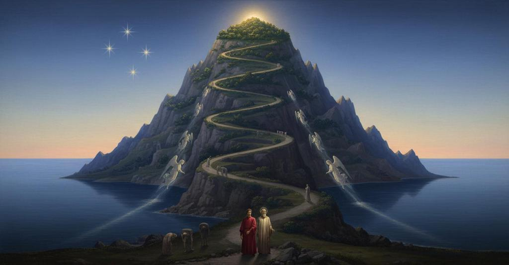

Purgatorio

Canto 1
Having emerged from Hell, the narrator launches his poem into the new subject of Purgatory, the realm of cleansing and hope. He invokes the Muses, especially Calliope, for inspiration. He describes the beautiful, serene dawn sky and the morning star Venus, a stark contrast to the darkness he has left. Turning south, he beholds four stars, symbolizing the cardinal virtues, which have not been seen by humanity since Adam and Eve were expelled from the Earthly Paradise.
地獄篇の過酷な旅を終え、詩人は才知の小舟の帆を上げて煉獄という第二の王国へと向かう。彼は詩の女神ムーサ、特にカリオペに呼びかけ、新たな歌への助力を請う。地獄の死んだような大気から抜け出した彼の目に、東の空に輝く金星と、南の空に輝く、北半球では見ることのできない四つの星の光景が広がる。この美しい夜明けの光景は、希望と浄化の始まりを象徴している。
Having emerged onto the shores of Purgatory, the narrator and Virgil are confronted by a dignified old man, Cato of Utica, the guardian of this realm. Cato challenges them, assuming they are damned souls who have escaped from Hell. Virgil explains their divinely sanctioned mission, clarifying that the narrator is alive and seeking spiritual liberty. He appeals to Cato's own famous love for political liberty, for which he died, and invokes the name of Cato's wife, Marcia, who resides in Limbo with Virgil, asking for passage through the seven realms of Purgatory.
煉獄の浜辺にたどり着いた語り手とウェルギリウスの前に、威厳ある一人の老人、煉獄の守護者カトーが現れる。カトーは、地獄の掟を破って逃れてきたのかと二人を咎める。ウェルギリウスは、天からの貴婦人（ベアトリーチェ）の願いによってこの旅が導かれていることを説明し、罪からの「自由」を求める語り手のために、煉獄の七つの王国を通らせてほしいと懇願する。彼は、自由のためにウティカで自決したカトー自身の高潔さに訴えかけ、さらに辺獄にいるカトーの妻マルキアへの愛に免じて許しを請う。
Cato responds to Virgil's appeal. He states that while Marcia was dear to him in life, the law of the afterlife now prevents her from influencing him. However, since a heavenly lady has sent them, he grants them passage. He instructs Virgil to cleanse the narrator of the filth of Hell by washing his face and girding him with a humble reed found on the shore, as a prerequisite to meeting the angelic guardian of Purgatory. He also tells them the sun will guide their ascent.
カトーは、今は煉獄の法によって妻マルキアの願いを聞くことはできないが、天の貴婦人の命令であるならばと、二人の通行を許可する。ただし、地獄の汚れを洗い清めるため、語り手の顔を洗い、腰にしなやかな葦を巻くよう命じる。そして、戻る道はなく、昇り来る太陽が登るべき道を示すだろうと告げる。
Following Cato's instructions, Virgil and the narrator walk down to the shore of Purgatory. As dawn breaks, Virgil uses the dew on the grass to wash the grime of Hell from the narrator's face. He then girds the narrator with a humble reed. As soon as the reed is plucked, another miraculously grows in its place, symbolizing the inexhaustible nature of humility.
カトーが姿を消すと、ウェルギリウスは語り手を導き、夜明けの平原を岸辺へと進む。カトーの指示通り、師は露で語り手の顔を洗い地獄の汚れを清め、次にしなやかな葦を語り手の腰に巻く。すると、引き抜かれた場所に奇跡のように新たな葦が即座に生え、煉獄に入るための儀式が完了する。
Canto 2
At sunrise on the shore of Purgatory, the narrator and Virgil see a light approaching swiftly over the sea. It is an angel piloting a boat carrying over a hundred newly arrived souls. The angel is powered by his own wings and glows with blinding light. The souls sing Psalm 114, "When Israel went out of Egypt." After the angel makes the sign of the cross over them, they disembark, and he departs as quickly as he came.
夜明けの煉獄の浜辺で、語り手とウェルギリウスは、海から猛スピードで近づく光を目撃する。その光は神の御使いが操る小舟であり、中には救済された百以上の魂が乗っていた。魂たちは、解放を象徴する詩篇を歌いながら浜辺に上陸する。御使いはすぐに去り、魂たちは新たな地に降り立つ。
The newly arrived souls on the shore of Purgatory, bewildered by their surroundings, ask the narrator and Virgil for the way up the mountain. Virgil explains they too are newcomers, having arrived by a much harder path (Hell). The souls then realize the narrator is alive because he breathes, and they gather around him in amazement, like people crowding a messenger with news, forgetting their primary purpose of beginning their purification.
煉獄の浜辺に上陸したばかりの魂たちは、この新しい場所に戸惑い、語り手とウェルギリウスに山への道を尋ねる。ウェルギリウスは、自分たちも巡礼者であり、地獄という遥かに困難な道を通ってきたばかりだと説明する。語り手が生きている人間だと気づいた魂たちは、息をしていることに驚愕し、まるで平和の知らせを運ぶ使者に群がるように彼の周りに集まり、浄化の旅に出るという本来の目的も忘れて彼を凝視する。
Dante recognizes a soul as his friend, the musician Casella. After trying and failing to embrace the incorporeal shade, Dante learns why Casella's arrival was delayed and asks him to sing a song to soothe his weary soul. Casella obliges, singing one of Dante's own poems so beautifully that everyone present, including Virgil, stops to listen, captivated.
煉獄の浜辺で、語り手は旧友である音楽家カセッラの魂と再会する。実体のない魂との抱擁に失敗した後、語り手はカセッラの到着がなぜ遅れたのかを尋ねる。カセッラは、1300年の聖年が始まったことで、天使の渡し守がテヴェレ川の河口ですべての魂を差別なく救済しているため、ようやく来ることができたと説明する。語り手の願いに応え、カセッラはかつて語り手の苦悩を癒した愛の歌を歌い始め、その甘美な歌声にウェルギリウスも他の魂たちも聞き惚れる。
Cato interrupts Casella's song, scolding the newly arrived souls for delaying their purification. Like startled doves, the souls scatter and run toward the mountain, and Dante and Virgil quickly follow.
カセッラの歌声に誰もが聞き惚れていると、煉獄の守護者カトーが現れ、浄化を始めずに立ち止まっていることを厳しく叱責する。彼は、神を見る妨げとなる罪の殻を剥ぎ取るために、急いで山へ向かうよう命じる。カトーの言葉に驚いた魂たちは、餌をついばんでいる時に不意に驚かされた鳩の群れのように一斉に散り、語り手とウェルギリウスも慌ててその場を後にする。
Canto 3
After Cato's rebuke, the souls scatter toward the mountain. Dante, seeing his own shadow but not Virgil's, fears he has been abandoned. Virgil explains that as a spirit, he is incorporeal, though his physical body is buried in Naples. He then launches into a discourse on the limits of human reason, warning against trying to comprehend divine mysteries like the Trinity or how shades can feel torment. He sorrowfully cites the great pagan philosophers, including himself, whose unfulfilled desire for divine knowledge is now their eternal grief.
カトーに叱責された後、魂たちが山へ向かって散り散りになる中、語り手はウェルギリウスに寄り添う。ウェルギリウスは自らの遅滞を恥じる。歩き出すと、語り手は自分の影だけが地面に落ち、ウェルギリウスの影がないことに気づき、見捨てられたかと恐怖する。ウェルギリウスは、自分は影を落とさない霊体であると説明し、神の業は人間の理性を超えていると諭す。彼は、神を知ることなく望み続けるアリストテレスやプラトンのような賢者たち（そして彼自身）の運命を嘆き、心を乱して沈黙する。
Dante and Virgil arrive at the base of the Mount of Purgatory and find it impossibly steep. While Virgil considers how to ascend, Dante spots a slow-moving group of souls. They approach these souls—the excommunicated who repented at the last moment—and Virgil asks for the way up. The souls, behaving like a timid flock of sheep, are startled when they see Dante's shadow, realizing he is alive. Virgil explains their divinely sanctioned journey, and the souls gesture for them to proceed ahead.
語り手とウェルギリウスは煉獄の山の麓に到着するが、そのあまりの険しさに登る道を見つけられない。ウェルギリウスが思案に暮れる中、語り手はゆっくりと近づいてくる魂の一団を発見する。彼らが近づくと、羊の群れのように臆病で、語り手の影を見て驚き立ち止まる。ウェルギリウスは、語り手が天の徳によって旅する生者であることを説明し、道を尋ねる。魂たちは二人に先を行くよう促す。
One of the souls, who is blond and handsome but marked by battle wounds, asks the narrator if he recognizes him. He then reveals himself to be Manfred, King of Sicily. He explains that despite his grievous sins and excommunication by the Pope, he repented at the moment of death and was saved by God's infinite mercy. He recounts how the Archbishop of Cosenza had his bones exhumed and scattered. He then explains the rule of Ante-Purgatory: the excommunicated must wait thirty times the length of their period of defiance before beginning their ascent, unless this time is shortened by the prayers of the living. He begs the narrator to go to his daughter, Constance, and tell her the truth of his salvation and his current state, so that her prayers might help him.
破門されたまま死んだが、死の直前に悔い改めた魂の一人が、語り手に話しかける。彼は自らが皇妃コスタンツァの孫マンフレーディであることを明かし、教皇の命令で冒涜された自らの遺体と、神の無限の慈悲によって救われた魂の運命を語る。彼は、破門された者は煉獄に入る前に、破門されていた期間の30倍の時をこの岸辺で待たねばならないという煉獄の法を説明し、語り手に、地上に戻ったら娘のコスタンツァに真実を伝え、自分のための祈りを捧げてもらうよう懇願する。生者の祈りだけが、この待ち時間を短縮できるからである。
Canto 4
The narrator explains how the soul's total absorption in a single experience makes it lose all sense of time, which is why he was unaware that over three hours had passed while listening to Manfred. When the souls point out the path, it is a fissure so narrow and steep that the narrator says climbing it is like flying with the wings of great desire. The poets begin the difficult ascent, using both their hands and feet.
ダンテは、魂の統一性に関する哲学的考察を述べ、自身がマンフレーディの話に夢中になるあまり3時間以上が経過したことに気づかなかった体験を例に挙げる。魂たちは、非常に狭く険しい道を指し示す。ダンテはこの道をイタリアの他の難所と比較し、ここではウェルギリウスを光として、「大いなる望み」の翼で飛ばなければならないと語る。そして二人は、手足を使って岩の裂け目を登り始める。
After a difficult climb, Dante is exhausted. Virgil encourages him to reach a nearby ledge. They sit and rest, facing east toward where they began their ascent. Dante is surprised to notice the sun is on his left, a sign that they are in the Southern Hemisphere.
険しい裂け目を登りきり、疲れ果てた語り手はウェルギリウスに道筋を尋ねる。ウェルギリウスも正確な道は知らぬと認めつつ、上へ進むよう促す。あまりの急斜面に語り手が休息を求めると、ウェルギリウスは近くの岩棚を指し示し、二人はそこにたどり着く。東を向いて腰を下ろした語り手は、昇る太陽が左手にあることに驚く。それは、彼らが南半球にいることを示すものであった。
Virgil gives Dante a complex astronomical lesson to explain why the sun is in the north in the Southern Hemisphere, using the antipodal relationship between Jerusalem and Purgatory as a model. Dante understands and then asks how much further they must climb. Virgil explains that the ascent is hardest at the start and becomes progressively easier, and that Dante will know he has reached the next stage when the climb feels effortless.
ウェルギリウスは、語り手が太陽の位置に戸惑っているのを見て、天文学的な説明を行う。彼は、煉獄とエルサレムが地球の対極にあるため、太陽の軌道（黄道）が北半球と南半球で逆に見えることを説く。納得した語り手は、次にどれだけ登らねばならないか尋ねる。ウェルギリウスは、この煉獄の山は登り始めが最も辛く、高く登るほど楽になるという性質を説明し、登ることが船で川を下るように楽に感じられる時が、この道の終わりだと告げる。
As Virgil finishes explaining the mechanics of the mountain's ascent, a lazy voice from a nearby boulder interrupts them. The voice belongs to Belacqua, a friend of the narrator's from Florence, known for his indolence. He and other late-repentant souls are waiting in the shade. Belacqua explains they must wait a lifetime outside Purgatory's gate before they can begin their penance, a sentence that can only be shortened by the prayers of the living who are in a state of grace. Virgil then urges the narrator to move on, noting that it is now noon.
ウェルギリウスが煉獄の山の登り方を説明し終えると、近くの岩陰から怠惰な魂たちの声がする。その中には語り手の旧友ベラックァがおり、彼は、死ぬ間際に悔い改めた者は、生きた年数と同じ期間を煉獄の門の外で待たねばならないが、地上の善き人々の祈りによってその期間は短縮されうると説明する。最後にウェルギリウスは、正午になったことを告げ、先を急ぐよう促す。
Canto 5
As the narrator follows Virgil, a new group of souls notices his shadow, realizing he is alive. Virgil chides the narrator for being distracted, urging him to remain focused like a tower against the wind. The souls, who had been singing the 'Miserere,' send two messengers to inquire about the travelers. Virgil confirms the narrator is flesh and blood and tells the messengers that honoring him may benefit their group. The entire crowd of souls then rushes toward them, and Virgil advises the narrator to keep walking while listening to their pleas.
怠惰な魂たちから離れ、煉獄の山を登る語り手とウェルギリウス。新たな魂の一団が、語り手に影があることに気づき、彼が生きていることに驚く。ウェルギリウスは、他者の囁きに気を取られる語り手を「堅固な塔のように」あれと励ます。魂たちは『ミゼレーレ』を歌いながら近づき、語り手が生きていると知ると、大勢で彼に祈願するために押し寄せてくる。
The souls of the late-repentant who died violently plead with the narrator to stop, explaining that they all repented at the last moment. The narrator, unable to recognize anyone, offers to help. One soul, Jacopo del Cassero, asks for prayers in his hometown of Fano and recounts his murder near Padua, describing how he was ambushed, fled into a marsh, became entangled, and bled to death.
煉獄の山で、暴力によって殺されたが最後の瞬間に悔い改めた魂の一団が、語り手に自分たちのことを地上に伝えてもらうよう懇願する。その中の一人、ヤーコポ・デル・カっセロが、エステ家の者にいかに裏切られ、パドヴァ近郊で殺害されたかを語り、故郷ファーノで自分のために祈りを捧げてもらうよう頼む。
Another soul, Bonconte da Montefeltro, tells the narrator his story. He explains that although he died at the Battle of Campaldino and his body was never found, he was saved by a single tear of repentance shed in the name of Mary. A demon from Hell, enraged at losing the soul, took revenge on the body by summoning a great storm. The storm created a flood that washed Bonconte's corpse into the Arno river, burying it and preventing a proper funeral.
暴力によって殺された魂の一人、ブオンコンテ・ダ・モンテフェルトロが語り手に声をかける。彼はカンパルディーノの戦いで死んだ後、最後の瞬間の悔悛によって魂は天使に救われたが、魂を奪われたことに怒った悪魔が復讐として嵐を起こし、彼の亡骸をアルノ川に流して行方不明にさせた経緯を語る。彼は、地上の妻や縁者が自分のために祈ってくれないことを嘆く。
A third soul, Pia de' Tolomei, asks the narrator to remember her when he returns to Earth. She poignantly summarizes her life and death—'Siena made me, Maremma unmade me'—and alludes to the fact that her husband, who gave her her wedding ring, knows the truth of her demise.
暴力によって死んだ三番目の魂、ピーア・デ・トロメイが語り手に声をかける。彼女は、語り手が地上に戻った際に自分のことを思い出してくれるよう頼み、シエナで生まれ、マレンマで死んだことを簡潔に語る。そして、その死の真相を知るのは自分に指輪をはめて娶った夫であると、ほのめかして話を終える。
Canto 6
The narrator, like a lucky winner in a dice game, is besieged by the souls of the late-repentant who died violently. He frees himself by promising to carry their requests for prayers back to the world. He then names several of these souls, including victims of political feuds and personal vendettas like Benincasa, Federigo Novello, Count Orso, and Pier da la Broccia, ending with a warning to Pier's accuser, who is still alive.
語り手は、祈りを求める魂の群れに囲まれた自らの状況を、サイコロ賭博の勝者が分け前を求める人々に群がられる様子に喩える。彼は、約束をすることで群れから抜け出し、その中で出会った暴力によって死んだ魂たち（ギーン・ディ・タッコに殺された者、狩りで溺れた者、フェデリーゴ・ノヴェッロ、ピサのガーノ、オルソ伯、ピエール・ダ・ラ・ブロッチャ）を挙げる。最後に、ピエールを陥れたブラバンテの貴婦人に、地獄に堕ちないよう悔い改めよと警告する。
Dante asks Virgil to resolve an apparent contradiction: Virgil's own writings in the *Aeneid* seem to suggest that prayers cannot change divine decrees, yet the souls in Purgatory beg for prayers to shorten their sentences. Virgil explains that his pagan context was different, as their prayers were disconnected from God. He clarifies that in Christianity, prayer (a 'fire of love') can satisfy divine justice without compromising it. For a full resolution of this high theological doubt, however, Virgil tells Dante he must wait for Beatrice, whom he will meet, smiling and happy, at the top of the mountain.
語り手は、祈りが天の定めを変えられるのかとウェルギリウスに疑問を投げかける。ウェルギリウスは、異教徒の祈りとキリスト教徒の祈りは異なり、愛の祈りは神の正義を曲げるのではなく、魂の負債を肩代わりして償いを早めるのだと説明する。そして、この深い神学的な問題の最終的な答えは、煉獄の山頂で会うベアトリーチェが与えてくれるだろうと告げる。
Feeling re-energized, the narrator urges Virgil to climb faster, noting the mountain is already casting a shadow. Virgil explains they cannot reach the top before sunset. He then spots a solitary, dignified soul whom they approach for directions. This soul, silent and proud like a resting lion, ignores their questions until Virgil mentions he is from Mantua. At the name of their shared homeland, the soul reveals himself to be the poet Sordello and rushes to embrace Virgil.
語り手はウェルギリウスに先を急ごうと促すが、ウェルギリウスは日暮れ前にはあまり進めないだろうと告げる。彼は、道を教えてくれそうな、一人佇む高慢な魂を指し示す。その魂は、質問に答えず、逆に二人の出自を問う。ウェルギリウスが故郷「マントヴァ」の名を口にした途端、その魂（ソルデッロ）は同郷人だと叫び、二人は喜びの内に抱き合う。
Sparked by the patriotic embrace between Virgil and Sordello, the narrator launches into a famous, sorrowful invective against the state of Italy. He laments its servitude, internal strife, and lack of imperial leadership, comparing it to a ship without a pilot and a brothel. He rebukes the Church for usurping temporal power and castigates the Holy Roman Emperor, Albert I, for neglecting his duty to Italy. He lists warring families and suffering cities, begging Albert to come and see the chaos. The narrator concludes by questioning whether God has abandoned Italy or if this suffering is part of an inscrutable divine plan, observing that every city is full of tyrants.
ソルデッロが同郷のウェルギリウスを歓迎する姿を見て、詩人は内戦と無政府状態に引き裂かれたイタリアを嘆き、激しい政治的非難を始める。彼はイタリアを舵手なき船や売春宿に喩え、教皇の権力簒奪と、イタリアを顧みない神聖ローマ皇帝アルベルトを非難する。彼は皇帝にイタリアの惨状を見に来るよう呼びかけ、最後に、この混乱は神の深遠な計画の一部なのか、それとも神に見捨てられたのかと問い、イタリアの都々が僭主で満ちている現状を嘆く。
The narrator concludes the canto with a bitter, sarcastic invective against his native Florence. He ironically praises its citizens for their eagerness to talk about justice and hold office, while mocking the city's supposed wealth, peace, and wisdom. He condemns its chronic political instability, comparing its flimsy, short-lived laws unfavorably to those of ancient Athens and Sparta, and concludes with a powerful image of Florence as a sick woman, restlessly tossing and turning, unable to find comfort or a cure.
詩人はイタリアへの非難を締めくくり、故郷フィレンツェに痛烈な皮肉を向ける。彼はフィレンツェの富、平和、知恵を反語的に称賛しつつ、その市民の表面的な正義感、権力への渇望、そして絶え間ない政治的不安定さを指摘する。最後にフィレンツェを、安らぎを求めて絶えず寝返りを打つだけで痛みを紛らわすことしかできない病人に譬え、その終わりのない改革の無益さを描き出す。
Canto 7
After Virgil reveals his identity, an awestruck Sordello embraces him humbly, hailing him as the 'glory of the Latins.' Sordello asks how he came to be there. Virgil explains that he has traveled through all of Hell, sent by heavenly power. He clarifies that his damnation is not for any active sin but for the sin of omission—lacking Christian faith. He describes Limbo, where he resides with other virtuous pagans and unbaptized infants, a place of sighs but not torments. Virgil then asks Sordello for the quickest way to the gate where Purgatory proper begins.
ソルデッロは、目の前にいるのが偉大な詩人ウェルギリウスその人であると知り、驚きと畏敬の念に打たれて彼の足元を抱く。彼はウェルギリウスを「ラテン人の栄光」と讃え、ここへ来た経緯を尋ねる。ウェルギリウスは、自分は信仰を持たなかった罪（不作為の罪）によって天国を失い、地獄の第一圏、辺獄（リンボ）から来たと説明する。辺獄は拷問の苦しみはないが、キリスト教以前の徳高き魂や洗礼を受けなかった無垢な幼児たちが、希望なく溜息をついて過ごす場所であると語る。最後に彼は、煉獄の本格的な始まりの場所へ行く道を教えてほしいとソルデッロに頼む。
Sordello explains that ascent in Purgatory is only possible during the day. He demonstrates this by drawing a line on the ground, explaining that the darkness itself, not an external force, removes the power to climb. He suggests they find a resting place, pointing out a nearby valley where they can wait for dawn. Virgil agrees, and Sordello leads them toward this hollow in the mountainside.
ソルデッロは、煉獄では夜の闇の中では山を登ることができないという法則を説明する。これは外的な力によるものではなく、神の恩寵（太陽の光）なしには魂は浄化を進める力（意志）を失うためである。彼は、夜を過ごすのにふさわしい、山腹にえぐられた美しい谷間へと二人を案内する。
Sordello leads the poets to a beautiful valley hollowed out of the mountainside. The colors of the grass and flowers are so vibrant they would surpass any earthly pigment, and a thousand sweet smells blend into one complex fragrance. Here, souls sit singing the 'Salve, Regina'. Sordello advises that before they descend, they should observe the souls from their current vantage point on the ledge, as their features will be clearer from above.
ソルデッロは、夜を過ごすために二人を山腹の美しい谷間へ案内する。その谷は、地上のどんな顔料よりも色鮮やかな花々と草で覆われ、無数の香りが混じり合った芳香に満ちていた。そこでは、王侯たちの魂が「サルヴェ・レジーナ」を歌っている。ソルデッロは、谷に下りる前に、まず岩棚の上から彼らの姿を観察するよう提案する。
Sordello, from a high ledge, points out and identifies several late-repentant European rulers resting in the valley below. He describes Emperor Rudolf I, Ottokar II of Bohemia, Philip III of France, Henry I of Navarre, Peter III of Aragon, and Charles I of Anjou, commenting on their failures and the shortcomings of their descendants. He also identifies Henry III of England and William VII of Montferrat, reflecting on how virtue is rarely passed down through lineage.
谷間にいる王侯たちの中から、ソルデッロは怠慢であったヨーロッパの君主たちを一人ひとり指し示していく。イタリアを顧みなかった皇帝ロドルフォ、息子に劣るボヘミア王オッタケーロ、不名誉な死を遂げたフランス王フィリップ三世、宿敵シャルル一世と並んで歌うアラゴン王ピエール三世、そしてその不肖の息子たち、優れた息子を持ったイングランド王ヘンリー三世など、彼らの生前の行いや、美徳がいかに子孫に受け継がれ難いかを語る。
Canto 8
At twilight in the Valley of the Rulers, a soul leads the others in singing the evening hymn 'Te lucis ante.' Dante signals to the reader that an allegory is about to unfold. Two green-clad angels with broken swords descend from Heaven and take up positions on either side of the valley. Sordello explains they have come from the Virgin Mary to guard the souls against a serpent that will soon appear. Terrified, the narrator presses close to Virgil.
夕暮れ時、王侯たちの谷にいる魂の一人が、夕べの祈りの聖歌「テ・ルチス・アンテ」を歌い始め、他の魂たちもそれに続く。その後、天から緑の衣をまとった二人の天使が現れる。彼らは切っ先の折れた燃える剣を手に谷の両側に立ち、番人となる。ソルデッロは、二人が聖母マリアのもとから、やがて現れる蛇から谷を守るために遣わされたのだと説明する。それを聞いた語り手は恐怖に駆られ、ウェルギリウスに寄り添う。
Dante and Virgil descend into the Valley of the Rulers. There, the narrator is recognized by Nino Visconti, a judge from Gallura. Nino expresses joy that Dante is not damned and is startled to learn he is alive. He asks Dante to tell his daughter Giovanna to pray for him, and then bitterly laments his widow's remarriage, prophesying that her new family (the Visconti of Milan) will not honor her as his own (the rooster of Gallura) would have.
語り手とウェルギリウスは王侯たちの谷に下り、そこで語り手は旧友ニーノ・ヴィスコンティの魂と再会する。ニーノは語り手が生きてここにいることに驚き、地上に戻ったら娘のジョヴァンナに自分のために祈ってくれるよう頼む。彼は、未亡人の喪服を脱いで再婚した妻への苦い思いを語り、彼女の新しい夫（ミラノのヴィスコンティ家）は、自分（ガッルーラのヴィスコンティ家）ほど立派な墓を彼女に与えることはないだろうと、一族の紋章に絡めて皮肉を言う。
As the narrator observes the night sky, he notes three new stars (the theological virtues). As Virgil explains their significance, Sordello interrupts to point out a serpent—the symbol of temptation—entering the valley. The two guardian angels immediately swoop down, frightening the serpent away with the sound of their wings before returning to their posts.
ニーノとの会話の後、語り手は夜空に昇る三つの星（神学的徳の象徴）に気づく。ウェルギリウスが、それらが朝の四つの星（枢要徳）と入れ替わったと説明していると、ソルデッロが「我らが敵」である蛇の出現を指し示す。谷に侵入した蛇は、どこからともなく現れた二人の天使によって素早く追い払われ、天使たちは再び持ち場に戻る。
A soul who had been with Nino Visconti addresses Dante. He introduces himself as Currado Malaspina and asks for news of his homeland. Dante, despite never having visited, praises the Malaspina family's widespread fame for generosity and valor, noting their unique virtue in a corrupt world. In return, Currado prophesies that Dante will personally experience this hospitality within seven years, a prediction of Dante's future exile.
煉獄で浄罪中の魂が語りかけてくる。彼は、かつてヴァル・ディ・マーグラで権勢を誇ったコッラード・マラスピーナだと名乗り、故郷の知らせを尋ねる。語り手は、その地を訪れたことはないが、マラスピーナ家の寛大さと武勇の名声はヨーロッパ中に知れ渡っており、悪しき世の中でもその一族だけが正道を歩んでいると称賛する。これを聞いたコッラードは、7年が経つ前に、語り手自身がその言葉の正しさを身をもって体験することになるだろうと予言する。
Canto 9
The segment opens with a poetic description of the time, just before dawn. Overcome by his mortal need for rest, the narrator falls asleep in the Valley of the Rulers. He has a prophetic dream in which he is on Mount Ida and a golden eagle swoops down, snatches him, and carries him up to the sphere of fire, where the heat becomes so intense that it wakes him.
王侯たちの谷で夜を迎え、アダムの子である語り手は眠りに落ちる。彼は夢の中で、金の鷲によってイーデー山から炎の天球へと攫われる。その想像上の炎の熱さで、彼は目を覚ます。
The narrator awakens disoriented and terrified, having been mysteriously transported from the Valley of the Rulers. Virgil calms him, explaining that while he slept, Saint Lucia carried him up to the very gate of Purgatory proper. Reassured and comforted by this revelation of divine aid, the narrator's fear turns to resolve, and the two poets proceed toward the entrance.
夢から覚めた語り手は、自分が煉獄の門の前に運ばれていることに気づき混乱する。ウェルギリウスは、眠っている間に聖ルチアが彼を王侯たちの谷からここまで運び上げたのだと説明する。この天からの助けを知った語り手は安堵し、勇気を取り戻して、ウェルギリウスと共に煉獄の入り口へと向かう。
The narrator addresses the reader, signaling the elevated subject matter to come. He and Virgil approach the gate of Purgatory, which has three distinct steps. An angelic gatekeeper, whose face is too bright to look at and who holds a gleaming sword, challenges them. After Virgil explains they were sent by Saint Lucia, the angel allows them to approach. The narrator then describes the three allegorical steps: the first is a white marble mirror (Confession), the second a dark, cracked stone (Contrition), and the third a blood-red porphyry (Satisfaction). The angel sits upon the top step, on a threshold of diamond.
詩人は、より崇高な主題に入ることを読者に告げ、語り手とウェルギリウスが煉獄の門に到着する様子を描写する。門は三つの異なる色の階段の上にあり、抜き身の剣を持った天使が守っている。天使は、天の貴婦人（ルチア）の指示で来たことを知ると、二人を招き入れる。三つの階段は、それぞれ白い大理石（告白）、黒くひび割れた石（痛悔）、血のように赤い斑岩（償い）を象徴している。
The angel guarding the gate of Purgatory inscribes seven 'P's (for the seven deadly sins) on the narrator's forehead with his sword. He then uses two keys, one silver and one gold, to open the sacred gate, warning the narrator not to look back. As the gate opens with a thunderous noise, the narrator hears the 'Te Deum' being sung from within, the words sometimes obscured by the sound, like a choir singing with an organ.
語り手は、導き手に促されて煉獄の門を守る天使の前にひれ伏し、悔い改めの儀式を受ける。天使は彼の額に七つのP（七つの大罪）を剣の先で刻みつけ、金と銀の二つの鍵で門を開ける。門を開ける際、天使はペテロから授かった権威と、一度入ったら決して振り返ってはならないという警告を伝える。門が開くと、その轟音と共に、中から甘美な音と混じった賛歌「テ・デウム・ラウダムス」が聞こえ、語り手はついに浄化の領域へと足を踏み入れる。
Canto 10
After passing through the Gate of Purgatory, which slams shut behind them, the narrator and Virgil ascend a narrow, zig-zagging path. The difficult climb takes them a long time, but they eventually emerge onto a level, deserted terrace, the first of Purgatory proper. Exhausted, they pause to observe their new surroundings.
煉獄の門をくぐった語り手とウェルギリウスは、振り返ってはならないという警告を背に、門が閉まる音を聞く。二人は波のように壁が迫る狭く険しい道を、ジグザグに進みながら苦労して登っていく。数時間かけてその「針の穴」のような道を抜けると、砂漠よりも孤独な、煉獄の第一の環道（テラス）にたどり着く。その環道は、内側の崖と外側の虚空の縁に挟まれた、人間の背丈の三倍ほどの幅の平坦な道であった。
On the first terrace of Purgatory, reserved for the proud, the narrator and Virgil encounter a series of divinely crafted marble reliefs that serve as examples of humility. The narrator examines three scenes in detail: the Annunciation to the Virgin Mary; King David dancing humbly before the Ark of the Covenant, to the scorn of his wife Michal; and the Roman Emperor Trajan, who pauses his military departure to grant justice to a poor widow. The art is described as a form of 'visible speech,' so realistic it seems to live and breathe.
煉獄の第一環道（傲慢者の環）で、語り手は内側の崖壁が大理石でできており、神自身によって彫られた、謙遜の三つの模範が驚くほど写実的に描かれているのを発見する。一つ目は聖母マリアの「受胎告知」、二つ目は聖櫃の前で踊るダヴィデ王と彼を軽蔑する妻ミカル、三つ目は貧しい寡婦のために正義を執り行ったトラヤヌス帝の物語である。これらの彫刻は「見える言葉」と称されるほど生き生きとしていた。
Virgil points out a group of souls moving slowly, who will direct them. These are the proud, who are crushed to the ground under the weight of heavy stones, making them difficult to recognize. In a direct address, the narrator scolds proud humanity for being like 'worms' that fail to become the 'angelic butterfly' (the perfected soul). He compares the hunched-over posture of the sinners to that of a carved figure used as a corbel, bent double under a great weight. The suffering is so intense that even the most patient among them seems to cry, 'I can no more.'
煉獄の第一環道で、語り手とウェルギリウスは傲慢の罪を犯した魂たちに遭遇する。彼らは罰として重い石を背負わされ、地に這いつくばるように歩いている。詩人はこの苦しみの光景に動揺する読者を励まし、また罪人たちの姿を、天井を支えるために膝を折り曲げた彫像になぞらえる。彼らの苦しみは、魂を天使の蝶へと変えるための幼虫（蛆虫）の段階であると語られる。
Canto 11
The souls of the proud recite a version of the Lord's Prayer, adapted to their state of purgation. They pray for themselves and for the living. The narrator then reflects on their burden and on the mutual need for prayer between those on Earth and those in Purgatory, urging the living to help these souls ascend to Heaven.
傲慢の罪を浄める魂たちは、重荷を背負いながら、自分たちの状況に合わせて改変した「主の祈り」を唱える。彼らは神の助けなしには進めないことを認め、最後の誘惑からの救いを求める祈りは、自分たちのためではなく、地上に残してきた者たちのために捧げる。その姿を見た詩人は、煉獄の魂たちが地上の人々のために祈るように、地上の人々も彼らの罪の記録を洗い清めるために祈るべきだと深く思う。
Virgil, on behalf of Dante, politely asks the souls of the proud for the easiest path up the mountain, explaining that Dante's living body makes the climb difficult. A voice from among the burdened souls directs them to the right. The soul, revealing himself as Omberto Aldobrandeschi, explains that the stone he carries prevents him from looking up to identify Dante. He confesses he is being punished for his arrogance, born of his noble Tuscan lineage, a sin which brought ruin not only to himself but to his whole family.
傲慢の罪を浄める魂たちに対し、ウェルギリウスが登りやすい道を尋ねる。魂の一人、オンベルト・アルドブランデスコがそれに応じる。彼は重い石のために顔を上げられないが、自らの高貴な血筋ゆえの傲慢さが、いかに自分と一族を破滅させたかを告白し、神が満足されるまでこの罰を受け続けなければならないと語る。
While listening to the soul of Omberto, the narrator is recognized by another soul, the manuscript illuminator Oderisi of Gubbio. Oderisi, now humbled, admits a rival artist surpassed him and delivers a powerful speech on the vanity of earthly fame. He gives examples from art (Giotto eclipsing Cimabue) and poetry (one Guido eclipsing another), predicting that a third poet may eclipse them both. He argues that fame is as fleeting as the wind or the color of grass, pointing to the once-mighty Sienese leader Provenzan Salvani, now barely a whisper, as proof.
傲慢の罪を浄める魂たちと身を屈めて歩く語り手は、高名な写本装飾家であったオデリージ・ダ・グッビオに呼び止められる。オデリージは、自分より優れた芸術家の出現によって名声が移ろったことを認め、生前の傲慢さを悔いる。彼はチマブーエとジョット、二人のグイド（詩人）を例に挙げ、この世の名声がいかに儚く、草の色のようにすぐに色褪せる虚しいものであるかを説く。
Dante asks Oderisi to identify the soul he just mentioned, Provenzan Salvani. Dante then questions how Provenzan, a late repentant, was allowed to bypass the waiting period in Ante-Purgatory. Oderisi explains that Provenzan performed a profound act of humility by publicly begging in the Campo di Siena to raise ransom money for a friend. This act earned him passage. Oderisi then darkly prophesies that Dante's own future exile will teach him the meaning of such humiliation.
オデリージ・ダ・グッビオは、語り手が先ほど言及された魂が誰かと尋ねたのに答え、それはシエナの僭主プロヴェンツァン・サルヴァーニであると明かす。語り手は、なぜ死ぬ間際に悔い改めた彼が、煉獄辺獄での待機を免除されたのかと疑問に思う。オデリージは、プロヴェンツァンが最も栄光にあった時期に、友人を牢獄から救うため、シエナの広場で全ての恥を捨てて物乞いをしたという謙遜の行いによって、その特権が与えられたのだと説明する。最後に、この話の意味は語り手自身もやがて経験（追放）によって理解することになるだろうと、不吉な予言を付け加える。
Canto 12
The narrator walks bent over with a burdened soul until Virgil tells him to straighten up and continue their journey. Virgil then instructs him to look down at the pathway, where he sees examples of punished pride carved into the stone, much like figures are carved on tombstones, but of far greater artistry.
語り手は、傲慢の罪を浄める魂たちに倣って身を屈めて歩いていたが、ウェルギリウスに促されて姿勢を正す。しかし、その心は謙虚なままであった。次にウェルギリウスは、足元の敷石に目を向けるよう指示する。そこには、墓石が故人を偲ばせるように、神の御業による見事な彫刻で、罰せられた傲慢の数々の模範が描かれていた。
Dante describes the intricate carvings on the pavement of the first terrace of Purgatory, which depict thirteen examples of punished pride from biblical, classical, and mythological sources. These images, from the fall of Lucifer to the destruction of Troy, are so lifelike that Dante marvels at the divine artistry. He concludes with a sarcastic exhortation for humanity to continue in its pride and ignore the evidence of its own 'evil path'.
語り手は、煉獄第一環道の敷石に、神の御業によって彫られた「罰せられた傲慢の模範」の数々を目撃する。ルチフェルの堕天、巨人たちの敗北、ネンブロット、ニオベ、サウル、アラクネ、レハブアム、アルクマイオン、センナケリブ、タミリス、ホロフェルネス、そしてトロイアの滅亡といった、聖書や神話上の人物たちの物語が、死者は死者のように、生者は生きているように見えるほど写実的に描かれている。最後に詩人は、これらの光景を踏まえ、エヴァの子ら（人類）に対して、自らの悪しき道を省みずに傲慢であり続けることの愚かさを厳しく警告する。
Virgil urges the narrator, who has been engrossed in observing the carvings on the pavement, to move on, noting that it is noon. He points out an angel, the guardian of the exit from the first terrace, who is approaching them. The angel, shining like the morning star, welcomes them but laments how few humans accept the call to ascend. He then leads them to the steps carved into the rock, erases the 'P' for Pride from the narrator's forehead with a beat of his wing, and promises them a safe passage upward.
ウェルギリウスは、時を無駄にしないよう語り手を促し、第一の環の出口を守る天使を指し示す。その天使は、明けの明星のように輝き、二人を招き入れる。彼は、浄化への道に招かれる者がいかに少ないかを嘆き、語り手の額を翼で打って七つのPの一つ（傲慢の罪）を消し去り、次の環道への安全な道を約束する。
The poets ascend a steep stairway, which the narrator compares to a real one in Florence. They hear the Beatitude for the humble, and the narrator, feeling suddenly lighter, asks Virgil why. Virgil explains that one of the seven 'P's has been erased from his forehead and that the climb will become easier as the others are removed. Realizing this, the narrator reaches up and discovers only six 'P's remain, prompting a smile from Virgil.
傲慢の罪が浄められた語り手は、ウェルギリウスと共に第二の環道へと続く階段を登る。体が軽くなったことに気づいた語り手が理由を尋ねると、ウェルギリウスは額の七つのPの一つが消されたためだと説明する。語り手は、自分で見えない額に手をやり、文字が一つ減って六つになっていることを確かめる。その人間らしい仕草に、ウェルギリウスは微笑む。
Canto 13
The poets arrive at the second terrace of Purgatory, for the envious. The terrace is bare and made of livid stone. Lacking a visible path or souls to ask, Virgil decides to follow the sun. As they walk, they hear invisible spirits flying by, shouting examples of charity—the opposite of envy—which serve as the 'whip' to spur the souls to penance.
語り手とウェルギリウスは、嫉妬の罪を浄める煉獄の第二環道に到着する。そこは鉛色の岩肌が続く殺風景な場所だった。太陽を頼りに進むと、姿の見えない霊たちが「愛」の模範を叫びながら飛び交うのを聞く。最初の声は「彼らは葡萄酒を持たぬ」（カナの婚礼）、二番目は「我はオレステ」、三番目は「汝らに悪をなした者を愛せよ」というものだった。ウェルギリウスは、これらが嫉妬の罪を罰する「愛の鞭」であり、後には罰せられた嫉妬の例である「勒」を聞くことになると説明する。
Virgil directs the narrator's attention to a group of souls sitting along the stone bank. These are the envious, punished by having their eyelids sewn shut with iron wire. Clad in stone-colored cloaks and leaning on each other for support, they pray for intercession. Moved to pity, and feeling it an offense to observe them unseen, the narrator gets Virgil's permission to speak. He then addresses the souls, asking if any among them are Italian.
ウェルギリウスに促され、語り手は嫉妬の罪を犯した魂たちを観察する。彼らは岩と同じ色の外套をまとい、互いに寄りかかり、瞼を鉄の針金で縫い合わされて座っている。憐れみを感じた語り手は、ウェルギリウスに促されて魂たちに話しかけ、彼らの浄化が速やかになされることを祈った後、自分と同じイタリア出身の者がいるか尋ねる。
A soul answers the narrator, identifying herself as Sapia of Siena, a woman whose name meant 'wise' but who lived foolishly. She confesses her sin of envy, recounting how she rejoiced at the defeat of her own countrymen at the Battle of Colle. She explains that she only repented at the end of her life and that her time in Ante-Purgatory was shortened by the prayers of a holy man named Pier Pettinaio. Noticing that the narrator is alive, she asks who he is. He admits his own guilt of envy but states his fear of the punishment for pride (the terrace below) is far greater. Sapia, astonished by his living presence, asks him to restore her good name in Tuscany and ends with a bitter jab at the vanity of her fellow Sienese for their futile civic projects.
嫉妬の罪を浄めるシエナの魂サピーアが、語り手に身の上を語る。彼女は、コッレの戦いで故郷シエナが敗北したことを、嫉妬心から大いに喜んだ。死の間際に悔い改めたが、敬虔な櫛職人ピエール・ペッティナイオの祈りがなければ、償いの期間はまだ短縮されなかったという。語り手が、自分は嫉妬よりも下の環（傲慢）の罪を恐れていると明かすと、サピーアは驚き、地上に戻ったら自分の縁者に良い評判を伝えてほしいと頼む。最後に、タラモーネ港やディアーナ川といった無益な事業に夢中になるシエナ人を皮肉る。
Canto 14
Two souls of the envious, leaning on each other with their eyes sewn shut, notice the narrator's presence. Amazed that he is alive and can open and close his eyes, they ask him who he is and where he comes from. The narrator responds by describing the river Arno without naming it, explaining he comes from its valley but is not yet famous. One soul correctly guesses the river is the Arno, and the other asks why the narrator hid its name, as if it were something horrible.
煉獄の第二環道で、二人の魂が、生きている人間である語り手の存在に気づく。彼らは、その前例のない恩寵に驚き、慈悲にかけて身元と出身地を明かしてほしいと頼む。語り手は、故郷を流れる川（アルノ川）を遠回しに表現して答えるが、自分の名はまだ無名だと告げる。魂の一人はすぐにそれがアルノ川であると見抜き、もう一人は、なぜ彼がその名を、まるで恐ろしいものであるかのように隠したのかと不思議に思う。
One of the souls of the envious, Guido del Duca, answers his companion's question with a bitter invective against the inhabitants of the Arno valley. He describes them as progressively more vicious beasts—pigs, curs, wolves, and foxes—as the river flows from its source toward the sea. He then delivers a grim prophecy about the cruelty of his companion's grandson, Fulcieri da Calboli, who will savagely punish the Florentine 'wolves.' The companion, Rinieri da Calboli, is visibly distraught upon hearing this.
アルノ川の流域に住む魂、グイド・デル・ドゥーカが、その谷の住民たちの道徳的退廃を、豚、犬、狼、狐といった獣になぞらえて語る。彼は、もう一人の魂の孫であるフルチエーリ・ダ・カルボリが、フィレンツェ人（「狼」）を残酷に迫害するという恐ろしい予言をし、それを聞いたもう一人の魂、リニエーリを深い悲しみに陥れる。
Dante asks the two souls their names. Guido del Duca responds, identifying himself and his companion Rinieri da Calboli. He then launches into a long, sorrowful lament for the decline of virtue in their homeland of Romagna, listing by name the noble families and individuals of a bygone era of chivalry and courtesy. He contrasts this with the current corrupt state of the region and ends by telling Dante to leave, as the subject has caused him too much grief.
嫉妬の罪を浄める魂グイド・デル・ドゥーカが、ダンテの願いに応じて自らの名と、仲間であるリニエーリ・ダ・カルボリの名を明かす。そして彼は、かつては美徳に満ちていた故郷ロマーニャ地方が、いかに道徳的に退廃してしまったかを嘆く。彼は、今は亡き高潔な人物や貴族たちの名を次々と挙げ、彼らの子孫が堕落したこと、あるいは家系が途絶えたことを悲しみ、現在のロマーニャが「毒のある茨」に満ちていると語る。この悲痛な追憶に心を締め付けられた彼は、話すよりも泣くことを選び、ダンテに先へ進むよう促す。
After the souls of Guido del Duca and Rinieri fall silent, the poets continue walking. They hear two disembodied voices, examples of punished envy (Cain and Aglauros), which frighten the narrator. Virgil explains these are the 'bridles' meant to restrain humanity, and then rebukes mankind for ignoring the call of Heaven to focus on earthly things, thus earning divine punishment.
嫉妬の罪を浄める魂たち（グイド・デル・ドゥーカとリニエーリ）と別れた後、語り手とウェルギリウスは先へ進む。すると、嫉妬の罰の模範を示す二つの声が稲妻のように響き渡る。一つはカインの叫び、もう一つは石にされたアグラウロスの言葉である。怯える語り手に対し、ウェルギリウスは、あれらは人間を罪から引き留めるための「勒（くつわ）」であるが、人間は天の呼び声を無視して地上の餌に食いつくため、すべてを見通す神によって罰せられるのだと説明する。
Canto 15
The poets, walking west into the setting sun, are blinded by a light brighter than the sun. It is the Angel of Mercy, who invites them to ascend to the next terrace. As they climb the less-steep stairs, the Beatitude "Blessed are the merciful" is sung, and the narrator is encouraged with a cry of "Rejoice, you who overcome!".
時刻は午後三時頃。西へ向かう語り手とウェルギリウスの前に、まばゆい光を放つ天使が現れる。それは嫉妬の圏を司る「慈悲の天使」であり、語り手の額から二つ目のPを消し去り、次の環道への、より緩やかな階段へと二人を導く。登り始めると、背後から「憐れみ深き者は幸いなり」という祝福の歌が聞こえてくる。
Dante asks Virgil to explain the nature of envy, which arises from desiring earthly goods that are diminished when shared. Virgil explains that heavenly good, in contrast, is infinite and increases the more it is shared among souls, like light reflected between mirrors. When Dante is still confused, Virgil states that his human reason can only take the explanation so far and that Beatrice will provide the full, divine understanding. He ends by encouraging Dante to continue his penitential journey to erase the remaining five 'P's from his forehead.
嫉妬の圏を登る途中、ダンテはウェルギリウスに、先の魂グイド・デル・ドゥーカが語った「共有によって減らない善」について尋ねる。ウェルギリウスは、地上の富は分けると減るために嫉妬を生むが、天上の善（愛）は分かち合う者が多いほど、鏡が光を反射し合うように増大すると説明する。ダンテがなおも理解できないでいると、師は、この神学的な問いの完全な答えはベアトリーチェが与えてくれると述べ、残る五つの罪の浄化を急ぐよう促す。
Upon reaching the third terrace, for the wrathful, the narrator is immediately drawn into three ecstatic visions of meekness: Mary's gentle rebuke of the young Jesus in the temple, the Athenian ruler Pisistratus's calm refusal to seek revenge, and Saint Stephen's forgiveness of his murderers as he is stoned to death.
語り手は、ウェルギリウスに満足を伝えようとした矢先、煉獄第三環道（憤怒者の環）に到着し、我を忘れた幻視に引き込まれる。彼は、憤怒の罪に対する徳である「柔和」の三つの模範を次々と目撃する。最初は神殿で見つかったイエスに対する聖母マリアの穏やかな言葉、次に娘を辱められたにもかかわらず寛容を示したピシストラトス、そして最後は自分を石打ちにする者たちのために赦しを乞う聖ステファノの殉教である。
The narrator "wakes up" from his ecstatic visions. Virgil, who already knows what the narrator saw, explains that the visions were meant to open his heart to peace. Virgil's question ("What is wrong?") was not one of ignorance but a deliberate prompt to restore strength to the narrator's steps, just as one must spur on the lazy.
幻視から覚めた語り手は、よろめきながらも、自分の体験が偽りではなかったと認識する。ウェルギリウスは、語り手の内面をすべて見通していたことを明かし、幻視は神の平和を受け入れるために与えられたのだと説明する。彼が語り手に声をかけたのは、単に肉体的な状態を尋ねたのではなく、目覚めた者が再び歩き出すのを促すためであったと語る。
As the narrator and Virgil walk on the third terrace at dusk, a thick, dark smoke, which is the punishment for the wrathful, rolls toward them, blinding them and fouling the pure air.
夕暮れ時、語り手とウェルギリウスが進んでいると、前方に夜のように暗い濃い煙が現れる。それは逃げ場もなく、二人の視界と清らかな空気を奪ってしまう。これは憤怒の罪を浄める第三環道の罰であった。
Canto 16
Blinded by the thick smoke of the third terrace, the narrator follows Virgil, who offers his shoulder for guidance. They hear the souls of the wrathful singing the 'Agnus Dei'. One soul, Marco the Lombard, speaks to the narrator, marveling at his living presence. The narrator explains his journey, and in return, Marco confirms they are on the right path and asks for prayers.
語り手は、憤怒の罪を浄める第三環道の、地獄よりも暗い煙に包まれる。目を開けていられないほどの煙の中、彼は盲人のようにウェルギリウスに導かれ、「神の小羊」を唱える魂たちの声を聞く。煙の中から一人の魂（マルコ・ロンバルド）が語り手に声をかけ、生きている彼の旅の経緯を聞く。マルコは、自分が高潔さを愛したロンバルディア人であることを明かし、二人が正しい道を進んでいることを確認した後、天に着いたら自分のために祈ってくれるよう頼む。
The narrator asks Marco the Lombard to explain the cause of the world's corruption: is it fate (the heavens) or human choice? Marco sighs, then explains that while the heavens provide initial impulses, humanity possesses free will and the light of reason to overcome them. The ultimate cause of the world's ills lies within humanity itself, not in the stars.
語り手は、憤怒の罪を浄める煙の中でマルコ・ロンバルドに、世の堕落の原因は天の星々の影響か、それとも人間自身の責任かを問う。マルコは、天は最初の衝動を与えるが、人間には神から与えられた自由意志と理性があると説明する。したがって、世が道を踏み外す原因は天ではなく、人間自身のうちにあると説き、さらに詳しく語ることを約束する。
Marco the Lombard explains that the soul, created simple by God, is naturally drawn to pleasure and requires law (the Emperor) and spiritual guidance (the Pope) to direct it. He argues that the world's corruption stems from the Church's usurpation of temporal power, extinguishing the imperial 'sun' and mixing the sword with the shepherd's staff. He laments the loss of virtue in Lombardy, naming three old men as the last remnants of a better age. After Dante expresses his understanding, Marco identifies one of the men, Gherardo, before departing abruptly as an angel's light pierces the smoke.
マルコ・ロンバルドは、世の堕落の原因は自由意志の誤用と、教皇が皇帝の権力である俗権を簒奪したことにあると説く。彼は、かつてローマには俗権（皇帝）と教権（教皇）という「二つの太陽」があったが、今や教会が両方を兼ねることで世を泥に落としていると嘆く。彼は、失われた美徳の時代の生き残りとして三人の老人を挙げ、語り手がその一人ゲラルドについて尋ねると、驚きながらも夜明けの光を理由に急いで去っていく。
Canto 17
Emerging from the blinding smoke of the third terrace, the narrator is immediately plunged into a series of ecstatic visions. These divinely sent visions are examples of punished wrath, showing the mythological story of Progne, the biblical hanging of Haman, and the suicide of Queen Amata from the Aeneid.
憤怒の罪を浄める煙から出た語り手は、我を忘れた幻視に襲われる。それは神から送られた、罰せられた憤怒の三つの模範であった。最初は、復讐のために息子の肉を夫に食べさせ、鳥に変えられたプロクネ。二つ目は、ユダヤ人絶滅を企てて磔にされたアマン。三つ目は、婚約者の死を誤信し、怒りのあまり自害したラテン人のアマタ王妃である。これらの幻視は、理性を失わせる憤怒の恐ろしさを示す。
The narrator is awakened from his visions of punished wrath by a brilliant angelic light. The angel, who is the guardian of the third terrace, invites the poets to ascend to the next level. As the narrator climbs, the angel erases the 'P' for wrath from his forehead, and he hears the Beatitude for the peacemakers. As dusk falls and the stars appear, the narrator feels his strength drain away, and he can no longer climb.
憤怒の幻視から覚めた語り手は、まばゆい天使の光に目をくらまされる。ウェルギリウスは、願いなくして導くこの天使の慈悲を説き、夜になる前に先を急ぐよう促す。階段を登り始めると、天使の翼が語り手の額を打ち、憤怒の罪（P）が消される。日が沈み星が現れると、語り手は力が抜けていくのを感じる。
Halted by nightfall on the fourth terrace of Purgatory, the narrator asks Virgil what sin is purged there. Virgil identifies it as sloth—a deficient love of the good—and begins a major discourse on the nature of love, explaining it as the root ('seed') of every virtue and every sin.
語り手とウェルギリウスは第四の環道（怠惰者の環）に到着する。語り手は、ここで浄められる罪は何かと尋ねる。ウェルギリウスは、全ての徳と罪の根源である「愛」の本質についての中心的な講義を始める。彼は、自然な愛は常に善であるが、理性の愛は、誤った対象を選ぶか、善を過少または過剰な熱意で愛することによって誤ると説明する。この環道では、善を愛する熱意が欠けていた罪（怠惰）が浄められる。
Virgil continues his explanation of love as the root of all actions. He explains that since one cannot hate oneself or God, all sinful love must be directed at one's neighbor (perverted love) or be a flawed love for the good. He outlines the three forms of perverted love—pride, envy, and wrath—which are punished on the lower terraces. He then introduces deficient love (sloth), punished on this terrace, and hints at the three forms of excessive love punished on the terraces above, which he leaves for the narrator to discover.
ウェルギリウスは、愛が罪の根源であることをさらに詳しく説く。彼は、愛が誤った方向に向かう三つの罪（傲慢、嫉妬、憤怒）を説明し、それらが下の三つの環道で浄められると語る。次に、真の善への愛が不十分である罪（怠惰）について述べ、それがこの第四環道で浄められると明かす。最後に、地上の二次的な善への過剰な愛（貪欲、大食、肉欲）が上の三つの環道で浄められると示唆するが、その詳細は語らず、語り手自身に探求させる。
Canto 18
Dante asks Virgil to explain the nature of love. Virgil describes love as a natural, neutral inclination toward a pleasing object. When Dante questions how there can be moral responsibility if love is an external response, Virgil explains that humans possess an innate faculty of reason (free will) that has the power to accept or reject these loves, and this is the source of all merit and blame. He concludes that Beatrice will provide the full, faith-based explanation.
ウェルギリウスは、愛は魂が好ましいものへと向かう生来の傾向であると説明する。これに対し、語り手は自由意志について疑問を呈す。もし愛が外的な衝動であるなら、人はそのことでどうして賞賛されたり非難されたりするのか、と。ウェルギリウスは、最初の衝動は功罪を超えた自然なものであるが、人間にはその衝動を判断し制御する生来の能力（理性、すなわち自由意志）があり、これが道徳の基礎となると説明する。彼が「自由意志」と呼ぶこの概念の完全な理解は、ベアトリーチェによってもたらされるだろうと述べる。
After Virgil's discourse, a drowsy Dante is startled by the souls of the slothful, who run past them in a great crowd. Two souls shout examples of zeal (Mary and Caesar). Virgil asks them for the way up. One soul, the former abbot of San Zeno in Verona, answers without stopping, prophesying ill for the one who appointed his deformed son to rule the monastery. As they run past, Virgil points out two final souls shouting examples of punished sloth.
夜中近く、ウェルギリウスの愛に関する講義を終えて眠気を感じていた語り手は、怠惰の罪を浄めるために走り続ける魂の群れによって目を覚まされる。魂たちは熱意の模範を叫びながら駆け抜ける。ウェルギリウスが道を尋ねると、サン・ゼーノの修道院長であった魂が、走りながら答え、自らの修道院に関する不吉な予言を残していく。彼が走り去った後、ウェルギリウスは怠惰の罰の模範を叫ぶ二人の魂が来るのを指し示す。
The souls of the slothful shout examples of their sin's consequences—the Israelites who died before reaching the Promised Land and the Trojans who abandoned Aeneas. After they disappear, the narrator's mind begins to wander from thought to thought until, overwhelmed, he closes his eyes and falls asleep, his thoughts turning into a dream.
怠惰の罪を浄める魂たちの最後尾が、約束の地を前に死んだイスラエルの民と、アエネアスの旅を途中で断念したトロイア人という、怠惰の罰の模範を叫びながら走り去る。魂たちが見えなくなると、語り手は次々と湧き上がる考えに心を奪われ、やがて眠りに落ちてその思いは夢へと変わる。
Canto 19
In a dream just before dawn, the narrator sees a grotesque, stammering woman. His gaze transforms her into a beautiful, singing Siren who boasts of her power to lead men astray, even Ulysses. A holy lady appears and commands Virgil to act. Virgil rips open the Siren's clothes, revealing a foul belly whose stench awakens the horrified narrator. The dream allegorizes the deceptive allure of the sins of excessive love (avarice, gluttony, lust) which are punished on the upper terraces.
夜明け前、怠惰の罪を浄める魂たちが去った後、語り手は眠りに落ち、夢を見る。夢の中で、どもりで醜い女が、語り手の眼差しによって美しいセイレーンへと変身し、魅惑的な歌で世の快楽を謳う。しかし、聖なる貴婦人が現れてウェルギリウスを呼び、師がセイレーンの正体を暴くと、その腹から発する悪臭によって語り手は目を覚ます。
After waking from his disturbing dream of the Siren, the narrator is urged onward by Virgil. An angel, representing the Beatitude for those who mourn, ushers them up to the fifth terrace, for the avaricious and prodigal. Still troubled by the vision, the narrator is told by Virgil to let it suffice as a lesson about the sins ahead and to instead look upward to the 'lure' of Heaven. Inspired by this, the narrator feels renewed, like a falcon answering its master's call, and continues the ascent.
夢から覚め、怠惰の罪を浄める第四の環道を去る語り手とウェルギリウス。第五の環道への入り口で、天使が語り手の額から怠惰の罪（P）を消し去る。しかし、語り手はセイレーンの夢の幻視にまだ心を乱されていた。ウェルギリウスは、彼が地上の誘惑（セイレーン）の正体と、それから逃れる方法をすでに見たのだから、天の誘い（神が回す天球）に目を向けて先へ進むべきだと厳しく諭す。この言葉に奮い立った語り手は、鷹が誘い餌に飛びつくように気力を取り戻し、次の環道への険しい道を登り始める。
Upon entering the fifth terrace for the avaricious and prodigal, the narrator sees souls lying face down, weeping. Virgil asks for directions and is told to keep to the outer edge. The narrator, with Virgil's permission, addresses one soul, asking his identity and why they are punished in this way, and offering to secure prayers for him on Earth.
語り手は煉獄第五の環道に入り、貪欲の罪を浄めるために地面にうつ伏せで泣いている魂たちを見る。彼らは詩篇の一節を口ずさんでいる。ウェルギリウスが道を尋ねると、魂の一人が右手を常に外側にして進むよう教える。語り手はその声の主に興味を抱き、ウェルギリウスの許可を得て、その魂に誰であり、なぜそのように罰せられているのかを尋ねる。
The soul identifies himself as Pope Adrian V. He confesses that his late conversion was prompted by the heavy, unfulfilling burden of the papacy. He explains that the avaricious are punished by being bound face down, a fitting retribution for their focus on earthly things. When the narrator kneels in reverence, Adrian tells him to stand, explaining that earthly ranks are void in the afterlife. He asks the narrator to leave and to tell his virtuous niece Alagia of his fate so she may pray for him.
第五の環道で、地面にうつ伏せになった魂は、自らが教皇ハドリアヌス五世であったことを明かす。彼は、教皇の座に就いて初めて世俗的な野心の虚しさに気づき、貪欲の罪から回心したと語る。彼は、生前、地上の富にしか目を向けなかった罰として、今や地面に顔を押し付けられているという応報の理を説明する。語り手が敬意を表して跪くと、教皇は天国では身分は無意味だと諭し、浄めを続けるために先へ進むよう促す。最後に、地上に残る唯一の希望である姪のアラージャに祈りを頼んでほしいと懇願する。
Canto 20
Dante reluctantly leaves Pope Adrian V and continues along the terrace of the avaricious. He launches into an invective against the "she-wolf" of avarice, questioning when a savior will come to banish her. He then hears a soul reciting examples of poverty and generosity (Mary, Fabricius, and Saint Nicholas). Intrigued, Dante approaches this soul and asks for his identity, promising to carry his story back to the world.
語り手は教皇ハドリアヌス五世のもとを名残惜しく去り、貪欲の罪を浄める魂たちがいる第五の環道を進む。彼は、全ての悪の根源である貪欲（古の雌狼）を呪い、それを打ち破る救い主の到来を願う。その時、貧しさと気前の良さという美徳の模範（聖母マリア、ファブリツィウス、聖ニッコロー）を一人で唱える魂の声を聞き、興味を惹かれた語り手は、その魂に正体を明かすよう求める。
The soul identifies himself as Hugh Capet, founder of the French royal dynasty. He confesses he is the "root of the evil plant" whose descendants have plagued Christendom through their avarice. He then launches into a long prophecy and denunciation of his lineage's crimes, including the actions of Charles of Anjou, Charles of Valois, and Philip the Fair, culminating in the attack on Pope Boniface VIII at Anagni. He concludes by explaining the penance of the avaricious: during the day they recite examples of poverty and generosity, and at night they shout out examples of punished avarice.
第五環道の魂は、自らがフランス王家の祖ユーグ・カペーであることを明かす。彼は、貪欲に駆られた子孫たちの罪深い行状、特にシャルル・ド・ヴァロワのフィレンツェへの裏切りや、アナーニ事件における教皇への暴挙を予言し、激しく非難する。そして、この環道では昼は貧しさと気前の良さの模範（聖母マリアなど）を、夜は罰せられた貪欲の模範（ピグマリオン、ミダス、クラッススなど）を唱えて罪を浄めているのだと説明する。
As Dante and Virgil leave Hugh Capet, the entire mountain of Purgatory trembles violently, terrifying the narrator. Immediately following the tremor, all the souls on the mountain cry out in unison, "Gloria in excelsis Deo." The poets stand motionless and in suspense, like the shepherds at the Nativity, until the event concludes. They resume their path, but the narrator is consumed with a desperate yet unspoken curiosity about what he has just witnessed, proceeding onward in timid and pensive silence.
ユーグ・カペーと別れた後、煉獄の山が激しく揺れ、語り手は死の恐怖を覚える。揺れの後、全ての魂が一斉に「いと高きところに神に栄光あれ」と叫ぶ。語り手とウェルギリウスは、キリスト生誕の知らせを聞いた羊飼いたちのように立ち尽くす。揺れと歌が収まった後、語り手はこの出来事の意味を知りたいという強い好奇心を抱くが、尋ねることができず、物思いに沈みながら先へ進む。
Canto 21
Dante is tormented by his desire to know the cause of the recent earthquake. As he follows Virgil, a new soul appears behind them, like Christ appearing to the disciples on the road to Emmaus. The soul greets them, and Virgil explains their unusual status: he is a damned guide, and Dante is a living man whose journey is divinely willed. Virgil then asks the new soul the very question Dante longed to ask: why did the mountain tremble and all the souls cry out? This question brings Dante immense relief, as he hopes his curiosity will finally be satisfied.
語り手は、先の地震と叫び声の理由を知りたいという渇望に駆られながら、ウェルギリウスに従って進む。その時、エマオへの道で弟子たちの前に現れた復活後のキリストのように、一人の魂が背後から現れる。ウェルギリウスはその魂に挨拶し、自分たちの旅が天の意志によるものであると説明する。そして、語り手が知りたくてたまらなかった問い、すなわち山が揺れて魂たちが一斉に叫んだ理由を、その新しい魂に尋ねる。
The new soul explains to the poets that the mountain of Purgatory is free from all earthly weather and change. The only "alteration" is the divine event of a soul's purification being completed. When a soul's will is finally free from its inclination to sin, the mountain trembles and all the other souls shout "Gloria" to God. The soul reveals that he himself has just completed his 500-year penance, which is why they witnessed the event. Delighted to have his question answered, Dante listens as Virgil asks the soul to reveal his name and story.
新たな魂は、煉獄の山が地上の気象現象から完全に自由であることを説明する。ここで起こる地震は、ある魂が浄化を終え、その意志が天国へ登るために解放された時に起こる神聖な合図である。その際、他のすべての魂も共に「神に栄光あれ」と叫んで喜ぶ。この魂は、自らが五百年以上の時を経て、たった今その解放を感じたばかりだと明かす。すべてを理解したウェルギリウスは、次にその魂に、誰であり、なぜそれほど長くここにいたのかを尋ねる。
The soul reveals his identity as the Roman poet Statius. He explains that he lived during the time of Titus and was famous for his poetry, particularly his epics, the Thebaid and the unfinished Achilleid. He professes profound admiration for Virgil's Aeneid, calling it his mother and nurse in poetry, the source of his inspiration. He concludes by stating he would willingly spend another year in Purgatory just for the chance to have lived when Virgil was alive.
新たな魂は、自らがローマの詩人スタティウスであることを明かす。彼は皇帝ティトゥスの時代に生き、その詩才によってローマで名声を得た。叙事詩『テーバイラス』と未完の『アキレイス』を詠んだが、ウェルギリウスの『アエネイス』こそが自らの詩作における「母」であり「乳母」であったと、最大の霊感の源であることを語る。最後に、ウェルギリウスが生きていた時代に共に生きたかったという強い憧憬の念から、そのためなら煉獄での償いを一年延長しても構わないとまで言い、師への深い敬愛を示す。
Upon hearing Statius's fervent praise for the Aeneid, Dante cannot suppress a smile, despite Virgil's silent command to stay quiet. Statius notices and asks for an explanation. Caught in a dilemma, Dante is given permission by Virgil to speak. He then reveals to the astonished Statius that his guide is none other than Virgil himself. Overcome with emotion, Statius tries to embrace Virgil's feet, but Virgil stops him, reminding him that they are both incorporeal shades. Statius explains his gesture as proof of the love that made him forget their 'insubstantiality' and treat a shade as a solid object.
スタティウスがウェルギリウスへの深い敬愛を語った直後、語り手は思わず笑みを漏らしてしまう。スタティウスがその理由を尋ねると、板挟みになった語り手は、ウェルギリウスに促されて、目の前にいる人物こそが敬愛するウェルギリウス本人であることを明かす。感激したスタティウスはウェルギリウスの足元を抱こうとするが、互いに実体のない魂であることを理由に制止される。スタティウスは、自らの虚しい本性を忘れるほどに、ウェルギリウスへの愛が深いのだと語る。
Canto 22
The angel of the fifth terrace erases a 'P' from the narrator's forehead. As they ascend, Virgil asks Statius how he, a man of such wisdom, could have been avaricious. Statius explains he was actually the opposite—prodigal (a spendthrift)—and this sin is purged in the same circle as avarice, a realization he came to by reading a line in Virgil's *Aeneid*. Virgil then asks how Statius became a Christian, as his own poems show no evidence of it. Statius gives Virgil full credit, explaining that he interpreted Virgil's Fourth Eclogue as a prophecy of Christ. He confesses that he was a secret Christian out of fear, and this lukewarmness is why he spent over 400 years on the fourth terrace (for the slothful) before ascending to the fifth.
ウェルギリウスは、賢明なスタティウスがなぜ貪欲の罪を犯したのかと尋ねる。スタティウスは、自分は貪欲ではなく、その反対の浪費の罪を犯したのであり、ウェルギリウスの『アエネイス』の一節によってその罪から回心したと説明する。次にウェルギリウスがキリスト教徒になった経緯を尋ねると、スタティウスはウェルギリウスの第四の牧歌が預言となって自分を信仰に導いたと明かす。しかし、恐れから信仰を隠していたため、怠惰の圏で長い時を過ごしたと語る。
Statius asks Virgil about the fate of other classical poets. Virgil explains they reside with him in Limbo, along with many other famous Greek and Latin figures, including characters from Statius's own epics. Having reached a new terrace, the three poets continue their journey, with Dante following behind and listening intently to the poetic discourse between Virgil and Statius.
スタティウスはウェルギリウスに、テレンティウスやプラウトゥスといった古代ローマの詩人たちの運命を尋ねる。ウェルギリウスは、彼らが自身やオメロス、他の多くのギリシャの詩人、そしてスタティウスの叙事詩に登場する人物たちと共に、地獄の第一圏（辺獄）にいると答える。会話が途切れ、時刻が午前10時を過ぎた頃、三人は煉獄の慣習に従って山を巡り始める。ダンテは二人の偉大な詩人の後ろを歩き、詩作の糧となる彼らの会話に耳を傾ける。
The poets' discussion is interrupted by a strange, inverted tree bearing sweet-smelling fruit. As they approach, a voice from the branches warns them they will be denied the food and then recites examples of temperance: Mary at the wedding at Cana, ancient Roman women, Daniel, the inhabitants of the Golden Age, and John the Baptist in the desert. This serves as the 'whip' for the gluttonous on this terrace.
三人の詩人が歩いていると、甘い香りの果実をつけた奇妙な木が現れる。その木は、誰も登れないように逆さに生えており、岩からの水が葉を濡らしている。葉叢の中から聞こえる声は、この食べ物は手に入らないと告げた後、節制の模範として、カナの婚礼における聖母マリア、古代ローマの女性、預言者ダニエル、黄金時代の人間、そして荒野の洗礼者ヨハネを挙げる。
Canto 23
While the narrator stares at a strange tree, Virgil urges him onward. They soon encounter the souls of the gluttonous, emaciated figures who are weeping and singing a psalm. The narrator is struck by their skeletal appearance and wonders how the mere scent of fruit and water can cause such suffering. One of the souls then recognizes the narrator and calls out to him in astonishment.
語り手は第六の環道（大食の圏）に入り、飢えでやせ衰えた魂たちに遭遇する。彼らは唇で犯した罪を唇で祈ることで浄めている。その中の一人の魂が、語り手に気づき、驚いて声をかける。
The narrator recognizes the emaciated soul by his voice as his friend, Forese Donati. Grieved by his appearance, the narrator asks what causes such torment. Forese explains that a divine power emanating from the tree and water thins them out. The scent of the fruit and water kindles an insatiable desire, which is a pain that is constantly renewed. However, Forese corrects himself, calling this pain a 'solace,' because the same will that draws them to their punishment is what led Christ joyfully to the cross to redeem humanity.
大食の罪でやせ衰えた魂の中から、語り手は旧友フォレーゼ・ドナーティを声で認識する。フォレーゼは、禁じられた木と水から発せられる香りが絶え間ない飢えと渇きを引き起こし、それによって魂が浄められると説明する。彼は、この「苦しみ」は、キリストが喜んで十字架にかかったのと同じ意志で魂を救済へと導くため、むしろ「喜び」であると語る。
Dante asks his friend Forese how he ascended to the terrace of the gluttonous so quickly, less than five years after his death, given that he was a late repentant. Forese explains it was due to the ceaseless, devout prayers of his virtuous wife, Nella. He contrasts her piety with the immodesty of other Florentine women, delivering a harsh prophecy that they will soon face divine punishment for their shamelessness.
ダンテは、亡くなってから5年も経っていないフォレーゼが、すでに煉獄辺獄での待機を終えてこの環にいることに驚く。フォレーゼは、貞淑な妻ネッラの熱心な祈りのおかげで、待機期間を短縮できたのだと説明する。そして、フィレンツェの女たちの恥知らずな風俗を激しく非難し、彼女たちに近いうちに天罰が下るだろうと予言する。
Dante explains his presence to his friend Forese Donati. He acknowledges their shared sinful past, then explains how Virgil rescued him from that life when the moon was full and led him through Hell. He continues by saying that Virgil's guidance is bringing him up the mountain of Purgatory until he can meet Beatrice, at which point Virgil must leave him. Dante then identifies Virgil by name, and also points out the other soul with them (Statius), explaining he is the one whose recent graduation from Purgatory caused the mountain to tremble.
語り手は旧友フォレーゼ・ドナーティに応え、自分たちの罪深い過去を思い出すのは辛いと認めつつ、ウェルギリウスによって救われ、この浄化の山へ導かれた経緯を説明する。彼は、自らが生きている肉体を持つため影ができ、最終的にはベアトリーチェの元へ行くが、そこまでウェルギリウスは同行できないと語る。最後に、自分の導き手がウェルギリウスであること、そして先ほど山を揺るがしたのは、浄化を終えて天国へ昇るスタティウスの魂であったことを明かす。
Canto 24
While walking, the narrator continues his conversation with Forese Donati. Forese explains that his sister, Piccarda, is already triumphant in Heaven and then, at the narrator's request, points out several other notable souls among the gluttonous. These include the poet Bonagiunta of Lucca, Pope Martin IV (purging his love for eels and wine), Ubaldin da la Pila, Archbishop Bonifazio, and Messer Marchese, all of whom seem content to be named.
語り手は、大食の罪を浄める魂フォレーゼ・ドナーティに、妹ピッカーダの行方を尋ね、また他の著名な魂について問う。フォレーゼは、ピッカーダがすでに天国にいることを告げ、同じ環にいる詩人ボナジュンタや、教皇マルティヌス四世、その他の有名な大食家たちを次々と指し示し、紹介していく。
The narrator speaks with the soul of Bonagiunta of Lucca. Bonagiunta prophesies that Dante will be made to appreciate Lucca by a woman named Gentucca. He then identifies Dante as the poet who began the 'sweet new style.' Dante defines his poetics as faithfully writing down what Love dictates to him. This explanation allows Bonagiunta to understand the crucial difference between Dante's school of poetry and that of his predecessors, like Guittone d'Arezzo and the Notary.
大食の罪を浄める魂の中から、ルッカ出身の詩人ボナジュンタが語り手に声をかける。彼は、ジェンツッカという女性のおかげで語り手が将来ルッカを好きになるだろうと予言する。次に、語り手が『愛の知性を持つ貴婦人たちよ』で始まる詩を書いた本人かと尋ねる。語り手の答え（愛が霊感を与えるままに書くという詩作の定義）を聞いたボナジュンタは、自分たちの古い詩風と、語り手の「甘美な新体」を隔てていた「結び目」が何であったかを悟り、満足して黙る。
Forese Donati and the other souls of the gluttonous hurry on their way. Forese briefly stays behind to speak with the narrator, prophesying the violent death of his brother, Corso Donati, who is to blame for Florence's corruption. He then departs, explaining that time is too precious in Purgatory to delay, and the narrator continues with his two great guides, Virgil and Statius.
ボナジュンタとの会話の後、大食の罪を浄める魂たちは鳥の群れのように急いで去る。しかし、語り手の旧友フォレーゼ・ドナーティは少しの間留まり、語り手と共に歩く。語り手がフィレンツェの道徳的退廃を嘆くと、フォレーゼはそれに最も責任がある自身の兄コルソ・ドナーティの悲惨な死を予言する。その後、煉獄では時間が貴重であると言い、急いで仲間たちの後を追い、語り手はウェルギリウスとスタティウスという二人の導き手と共に残される。
The poets encounter a second tree on the terrace of the gluttonous. Souls beneath it beg futilely for its fruit. A voice from the branches explains the tree is an offshoot of the one in Eden and warns them away. It then recites examples of punished gluttony (the Centaurs and Gideon's soldiers). As they walk on, an angel, brilliant red and shining, directs them to the next ascent. The angel's wing erases a 'P' from the narrator's forehead, and he hears the Beatitude for those who hunger for righteousness.
語り手たちは、大食の罪を浄める第二の禁断の木に遭遇する。魂たちは、手に入らない果実を求めて苦しんでいる。木の葉叢から聞こえる声は、大食がもたらした災いの模範（ケンタウロス族、ギデオンの兵士たち）を語り、近づかないよう警告する。その後、三人が進むと、まばゆい天使が現れ、第六の環道への道を指し示す。天使は語り手の額から大食の罪のPを消し去り、その行為はアンブロシアの香りを伴う。最後に、節制を讃える祝福の言葉が聞こえてくる。
Canto 25
Dante and Virgil ascend to the next terrace. Dante is hesitant to ask his pressing question: how can incorporeal shades suffer from emaciation if they do not need food? Virgil encourages him to speak. After Dante asks, Virgil provides two brief classical analogies (Meleager and a mirror image) but then defers the full, complex explanation to Statius, whom he asks to act as the "healer" of Dante's intellectual "wounds." Statius humbly agrees.
語り手は、魂たちがなぜ栄養を必要としないのに飢えで痩せることができるのかという疑問を抱く。ためらう語り手をウェルギリウスが励まして質問させると、ウェルギリウスは神話と鏡の比喩で答えるが、完全な説明はスタティウスに委ねる。スタティウスは、ウェルギリウスへの敬意を示しつつ、その神学的な問いに答えることを承諾する。
Statius begins a scholastic explanation of human generation. He describes how the "perfect blood" (semen) acts on female matter to form a fetus, first with a vegetative soul (like a plant), then a sensitive soul (like a sea-sponge). He then explains that once the embryo's brain is sufficiently developed, God himself directly breathes a rational soul into it. This higher soul absorbs the lower functions, becoming a single entity that can live, feel, and think. He uses the analogy of sunlight turning grape juice into wine to illustrate this divine process.
スタティウスは、ダンテの「実体のない魂がなぜ飢えで痩せるのか」という問いに答えるため、まず人間の魂の生成について神学的に説明する。彼は、精液が胎内で植物的、次いで動物的な魂を形成した後、胎児の脳が完成した時点で神が直接「理性の魂」を吹き込むと語る。この神の魂は、先行する二つの魂を自らの内に吸収して一つの魂となり、この魂が生き、感じ、自らを省みるのだと説く。最後に、この神の奇跡を、太陽の熱が葡萄の汁と合わさって葡萄酒になる様に譬える。
Statius completes his explanation of how incorporeal souls can have physical sensations. He describes that upon death, when Lachesis (one of the Fates) cuts the thread of life, the soul's 'formative power' impresses itself on the surrounding air, creating an 'aerial body' or shade. This shade is attached to the soul, like a flame to a fire, and can express emotions and experience sensations like speaking, weeping, and hunger. This, he concludes, is the reason the narrator sees emaciated souls on the terrace of the gluttonous.
スタティウスは、ダンテの疑問に答えるため、死後の魂がいかにして「影（霊体）」を形成するかを説明し続ける。人の命が尽きると、魂は肉体から離れ、記憶・知性・意志といった高次の能力だけをより鋭敏な形で保ち、死後の行き先（地獄か煉獄の岸）へ至る。そこで魂の「形成の力」が周囲の大気に作用し、虹が大気に色をつけるように、魂の姿を大気に刻印して霊体を形成する。この霊体は、感覚器官を持ち、魂の感情（喜び、悲しみ、欲望）に応じて姿を変えるため、話したり、泣いたり、飢えで痩せたりすることができる。これこそが、ダンテが不思議に思っていた現象の原因であると、スタティウスは締めくくる。
The narrator and Virgil arrive at the seventh and final terrace of Purgatory, where the lustful are punished by walking through a wall of fire. The poets proceed on a narrow, flame-free ledge. The souls within the fire sing a hymn, 'Summae Deus clementiae,' and shout out examples of chastity—the Virgin Mary, the goddess Diana, and virtuous spouses—which serve as their 'food' and 'treatment' to heal their final wound of sin before they can enter the Earthly Paradise.
語り手たちは第七環道（色欲者の環）に到着する。そこでは罪人たちが炎の壁の中で浄められており、狭い通路を慎重に進まねばならない。魂たちは賛歌と、聖母マリアやディアナといった貞節の模範を交互に叫ぶことで罪を浄化している。
Canto 26
Walking single file along the edge of the seventh terrace, the narrator's shadow on the flames makes them seem hotter, alerting the souls of the lustful to his living presence. One soul, burning with thirst and fire, asks him to explain how he can cast a shadow. Before the narrator can answer, a second group of souls appears, walking in the opposite direction. The two groups greet each other with a brief, chaste kiss, like ants touching antennae, before continuing their separate penances.
色欲の罪を浄める第七環道で、語り手の影が魂たちの注意を引く。一人の魂が彼が生者である理由を尋ねるが、その時、反対から来た別の魂の一団とすれ違いざまに口づけを交わす光景に、語り手は心を奪われる。
The two groups of lustful souls, after greeting each other, shout out examples of their specific sins: "Sodom and Gomorrah" and the myth of Pasiphaë. They then part ways like migrating cranes. The first group approaches the narrator, who explains he is a living man on a divinely guided journey. He asks them to identify themselves and the other group so he can record their story. The souls are struck dumb with amazement, like a simple mountaineer seeing a city for the first time, before their shock subsides.
色欲の罪を浄める二つの魂の集団は、互いの罪の模範（ソドムとゴモラ、パシパエ）を叫びながらすれ違うと、再び浄罪の営みに戻る。語り手は、自分に近づいてきた魂たちに、自らが天の恩寵によって旅する生者であることを説明し、天国への速やかな到達を祈る代わりに、彼らともう一方の集団の正体を教えてほしいと頼む。魂たちは、初めて都会に来た山出しのように、その言葉に驚き呆然とする。
The soul speaking identifies himself as the poet Guido Guinizzelli and explains the sins of the two groups on this terrace: his group is punished for heterosexual lust (exemplified by Pasiphaë) and the other for homosexual lust (exemplified by Caesar). Overwhelmed with reverence at meeting his poetic 'father,' the narrator stands speechless for a moment before offering his devoted service.
色欲の罪を浄める魂の一人が、この環には二つの集団がいると説明する。一つはカエサルのように同性愛の罪を犯した者、もう一つはパシパエのように自然に反する異性愛の罪を犯した者である。その魂は、自らが詩人グイド・グイニツェッリであると明かす。語り手は、自らが「甘美で優雅な愛の詩」の「父」と仰ぐ師との出会いに深く感動し、リュクールゴスの息子たちが母に再会した時の喜びに自らをなぞらえ、炎のために近づけないながらも、彼に奉仕を誓う。
Guido Guinizzelli responds to the narrator's reverence and, in turn, praises another poet, Arnaut Daniel, as a 'better craftsman.' After criticizing popular literary judgment and requesting a prayer, Guinizzelli vanishes into the flames. The narrator then addresses Arnaut, who replies in his native Provençal, expressing both his sorrow for his past sins and his joy for his coming salvation. He begs the narrator to remember his suffering before he too disappears into the refining fire.
グイド・グイニツェッリは、ダンテの賞賛に対し、自分より優れた詩人としてプロヴァンスの詩人アルノー・ダニエルを指し示す。彼は、世評よりも真の芸術的価値が重要であると説き、ダンテに祈りを頼んで炎の中へ戻る。ダンテがアルノーに近づくと、彼はプロヴァンス語で自らの浄罪の状態（過去の罪を泣き、未来の喜びを歌う）を語り、ダンテに祈りを求めてから、同じく浄めの炎の中へと身を隠す。
Canto 27
As the sun sets, the poets are met by the angel of the seventh terrace, who commands them to pass through a wall of fire. The narrator is frozen with terror, imagining being burned alive. Virgil tries to reassure him, but only succeeds in convincing him to enter when he reveals that the fire is the only thing standing between the narrator and Beatrice. At her name, the narrator's resolve returns. Virgil, amused, leads the way into the flames, placing the narrator between himself and Statius for protection.
第七環道の終点で、天使が炎の壁を通らねば先へは進めないと告げる。恐怖に凍りつく語り手に対し、ウェルギリウスは励ましの言葉をかけるが、彼は動けない。ついにウェルギリウスが「この壁がベアトリーチェとお前の間を隔てている」と告げると、その名に勇気づけられた語り手は決意を固める。ウェルギリウスが先導し、語り手が続き、スタティウスが最後尾となって、三人はついに炎の中へと足を踏み入れる。
The narrator passes through the wall of fire, encouraged by Virgil's mention of Beatrice. An angel guides them to a staircase leading to the Earthly Paradise. Night falls, halting their progress according to the law of the mountain. The three poets bed down on the steps, where the narrator, like a goat watched by shepherds (Virgil and Statius), gazes at the unusually bright stars before falling into a prophetic sleep.
三人は色欲の炎を通り抜け、天使に導かれて次の環道への階段を登る。しかし、煉獄の掟により夜は登れないため、途中の階段で休息を取ることになる。牧人と山羊に喩えられる状況で、語り手は星を見つめながら、予言的な夢の前触れと共に眠りに落ちる。
At dawn, the narrator has a prophetic dream of a beautiful young woman named Leah. She explains that she represents the active life, gathering flowers to make a garland, while her sister Rachel represents the contemplative life, endlessly gazing at her own reflection. As the pre-dawn light grows stronger, the narrator awakens to find Virgil and Statius already up and ready to continue.
煉獄の階段で眠りに落ちた語り手は、夢の中で美しい乙女リアに出会う。彼女は、自らが「活動的生活」の象徴であり、妹のラケルが「観想的生活」の象徴であることを歌いながら花を摘んでいる。夜が明けて夢から覚めると、ウェルギリウスとスタティウスはすでに起きていた。
Virgil declares his guidance complete. He tells the narrator he has brought him through Hell's eternal fire and Purgatory's temporal fire, and his own reason can see no further. He proclaims the narrator's will is now free, upright, and whole, and that he should follow his own pleasure as a guide in the Earthly Paradise while awaiting Beatrice. Virgil concludes by crowning and mitering the narrator, making him sovereign over himself.
ウェルギリウスは煉獄の階段を登りきった語り手に、彼の導きがここで終わることを告げる。地獄と煉獄の火を経験し、知性と術によって導かれてきた語り手の意志は、今や「自由で、正しく、健やか」になった。ウェルギリウスは、ベアトリーチェが来るまで、語り手は自らの喜びを導き手として地上の楽園を自由に散策できると語る。最後に、彼は語り手を、自らの上に立つ皇帝であり教皇であると宣言し、「王冠と司教冠」を授ける。
Canto 28
The narrator, eager to explore, enters the Earthly Paradise, a vibrant and fragrant divine forest. He walks slowly over the perfumed ground, feeling a sweet, constant breeze. The leaves tremble and bend, while birds sing joyfully in the treetops, their song accompanied by the rustling of the leaves, a sound the narrator compares to the wind in the pine forest of Chiassi. He walks so deep into this ancient wood that he can no longer see where he entered.
ウェルギリウスによって自由意志を認められた語り手は、地上の楽園である神聖な森に入る。彼は芳香漂う森をゆっくりと進み、絶え間ないそよ風と、鳥たちの喜びに満ちた歌声と葉擦れの音の調和に包まれる。彼は森の奥深くへと進み、やがて入り口が見えなくなる。
The narrator's walk through the Earthly Paradise is halted by a clear river. On the other side, he sees a beautiful woman, Matelda, singing and gathering flowers. He calls out to her, comparing her to Proserpina, and asks her to come closer. She gracefully approaches the bank, allowing him to hear her song. The narrator then laments the small but uncrossable river that separates them, comparing his frustration to Leander's hatred for the Hellespont.
地上の楽園である神聖な森を進む語り手は、清らかな川に行く手を阻まれる。川の向こう岸で、歌いながら花を摘む一人の美しい貴婦人を目にし、心を奪われる。彼は彼女に近づいてくれるよう頼み、その願いは聞き入れられるが、二人を隔てる小川を渡ることができず、語り手はもどかしさを感じる。
The woman, Matelda, addresses the poets' surprise at her joyous laughter. She explains that Psalm 92 clarifies why this place, the 'nest' of humanity, is joyous. She then offers to answer any of the narrator's questions. The narrator responds that the presence of water and wind in the Earthly Paradise contradicts what he was previously told about Purgatory being free from earthly phenomena.
美しい貴婦人（マテルダ）は、地上の楽園で自分が笑っているのを見て驚いている語り手の、口に出されない困惑に気づき、語りかける。彼女は詩篇『デレクタスティ』が彼の疑問を晴らすだろうと述べ、質問があれば何でも答えると申し出る。語り手は早速、この場所には川と風があるが、これは煉獄が気象現象から解放されていると以前に聞いた話と矛盾する、と尋ねる。
Matelda explains the nature of the Earthly Paradise to the narrator. She clarifies that the wind is not earthly weather but the result of the heavens' rotation, which spreads generative power across the world. The water comes from a divine fount, splitting into two rivers: Lethe, which erases the memory of sin, and Eunoë, which restores the memory of good deeds. As a final grace, she reveals that this place is the very Golden Age dreamed of by the ancient poets. Hearing this, the narrator sees Virgil and Statius smile, acknowledging the truth in the old myths.
美しい貴婦人マテルダは、地上の楽園の風と川は自然現象ではなく神の摂理によるものだと説明する。風は天球の回転によって生じ、川は神の意志から直接湧き出る泉に由来する。この泉は二つに分かれ、一つは罪の記憶を消す「レテ」、もう一つは善行の記憶を取り戻す「エウノエ」となる。最後に彼女は、古代の詩人たちが歌った「黄金時代」とは、この地上の楽園のぼんやりとした記憶あるいは夢であったのだろうと語る。それを聞いたウェルギリウスとスタティウスは、微笑みを浮かべるのだった。
Canto 29
Matelda concludes her speech by singing a verse from the Psalms. She then walks along the riverbank with the narrator following. The river bends, and shortly after, she tells the narrator to stop and pay attention. A sudden, enduring bright light and a sweet melody fill the forest. The narrator reflects on Eve's disobedience, which deprived humanity of this paradise. The light intensifies into a fire-like glow, and the melody resolves into discernible songs, heralding an approaching procession.
マテルダは詩篇を歌いながら語り手と共に川岸を進む。やがて森全体がまばゆい光に包まれ、甘美な歌声が聞こえ始める。語り手はこの不思議な現象を目の当たりにし、楽園の喜びを早くから味わうことを妨げたエヴァの不遜を非難する。光と歌声は、燃える火のように輝く行列の到来を告げるものであった。
The narrator invokes the Muses to help him describe the divine procession he is about to witness. He sees what at first appear to be seven golden trees, but as he gets closer, he realizes they are seven candelabra. Matelda chides him for focusing only on the lights and not on the people in white who follow. The candelabra leave seven streams of colored light in the air behind them, like banners, which create a rainbow.
詩人は、これから描く神聖な行列の光景を詩句にするため、ミューズに助けを乞う。彼は遠くに七本の黄金の木のようなものを見るが、近づくにつれてそれらが七つの燭台であることがわかる。その炎は、ホザンナの歌声とともに進み、後ろに虹のような七色の光の帯を残す。マテルダは、光だけでなく、その後ろに来るものにも注意を払うよう語り手を諭し、彼は燭台に続く白い衣の人々を目にする。
The narrator describes the next part of the divine procession. Under the rainbow-like banners of the seven candelabra, twenty-four elders, representing the books of the Old Testament, walk two by two, singing a blessing. They are followed by four living creatures, representing the four Gospels, who are covered in eyes and have six wings each. The narrator directs the reader to Ezekiel for their description, but notes that he follows John's account regarding the number of wings.
地上の楽園で、語り手は神聖な行列の続きを目撃する。旧約聖書の24書を象徴する、百合の冠を戴いた24人の長老たちが、やがて現れるベアトリーチェを讃える歌を歌いながら進む。続いて、四福音書を象徴する、緑の葉の冠を戴き、六つの翼に無数の眼を持つ四頭の生き物が現れる。詩人は、その詳細な描写はエゼキエルの書に譲るとしつつも、翼の数についてはヨハネの黙示録に従ったことを明かす。
The narrator describes the central part of the divine procession: a triumphal chariot pulled by a griffin (symbolizing Christ and the Church). To its right dance three ladies representing the theological virtues, and to its left, four ladies representing the cardinal virtues. They are followed by figures representing the books of the New Testament. The procession halts when the chariot is directly opposite the narrator.
地上の楽園で続く神聖な行列の中心部分が描かれる。四頭の生き物に続き、グリフォンに引かれた凱旋車が現れる。これはキリストの寓意である。車の右側では神学的三徳（信・望・愛）、左側では枢要四徳（賢明・正義・勇気・節制）を象徴する貴婦人たちが踊る。車の後には新約聖書の書物を象徴する人物たち―二人の老人（使徒行録とパウロ書簡）、四人の慎ましい男たち（公同書簡）、そして最後の一人の老人（ヨハネの黙示録）―が続く。行列は語り手の正面で停止する。
Canto 30
The divine procession halts, and an elder sings a verse from the Song of Solomon, summoning Beatrice. A hundred angels appear on the chariot, singing a welcome and throwing flowers. From within this cloud of flowers, Beatrice appears, veiled and dressed in the colors of the three theological virtues (white, green, and red). Though Dante cannot see her face, his spirit immediately recognizes her and feels the overwhelming power of his former love.
神聖な行列の中心にある七つの燭台が停止すると、長老の一人が「来たれ、レバノンの花嫁よ」と叫ぶ。すると天使たちが車の上に現れ、花を撒きながらベアトリーチェの到来を告げる。語り手は、白、緑、赤の衣をまとったベアトリーチェの姿を目の当たりにする。彼女の顔は見えないものの、その存在から発せられる力によって、彼はかつての愛の強烈な力を再び感じ、魂が震える。
As soon as the narrator feels Beatrice's presence, the old love for her overwhelms him. He turns to tell Virgil, quoting a line from the Aeneid, only to discover that Virgil has vanished. As the narrator weeps for his lost guide, Beatrice addresses him sternly by name, telling him he must weep not for Virgil but for his own sins. She challenges him, asking how he dared to approach the mountain of salvation. Overcome with shame, the narrator looks down, and Beatrice's severe demeanor seems like a mother's harsh pity, meant for his own good.
ベアトリーチェの姿を認め、かつての愛の力を再び感じた語り手は、慰めを求めてウェルギリウスに振り返るが、彼がすでに姿を消したことに気づき、涙を流す。ベアトリーチェは、ウェルギリウスのためではなく、自らの罪のために泣くべきだと語り手を厳しく叱責する。彼女は自らがベアトリーチェ本人であると明かし、なぜこの聖なる山に登る資格を得たのかと問いただす。その言葉に、語り手は深い恥じらいから顔を伏せる。
The angels sing a psalm in pity for Dante, causing his frozen grief to melt into tears. Beatrice then addresses the angels, explaining that she must rebuke Dante so his guilt and grief are equal. She recounts how Dante, though gifted with great potential, strayed from the true path after her death, pursuing false goods despite her attempts to recall him through dreams. His fall was so great that only a journey through Hell could save him, a mission for which she personally recruited Virgil. She concludes that he cannot drink from the river Lethe without first paying the price of tearful repentance.
天使たちの同情的な歌声に、語り手の凍てついた悲しみは溶け、彼は涙を流す。ベアトリーチェは、なぜ自分がかくも厳しいかを天使たち（そして語り手）に説明する。彼女は、語り手が若き日に持っていた大いなる可能性、彼女の死後に彼が偽りの善を追って道を踏み外したこと、そして彼を救うための霊感がすべて無駄になったことを語る。唯一残された方法は彼に地獄を見せることであり、そのために彼女はウェルギリウスに助けを求めた。最後に彼女は、語り手は涙の悔い改めという代価を払うことなしにレテの川を渡ることはできないと宣言する。
Canto 31
Beatrice directly demands a confession from the shame-stricken narrator. Overwhelmed, he can only manage a barely audible "yes" before breaking down in tears. She presses him further, asking what worldly temptations and false promises made him abandon the hope of spiritual progress after her death. Weeping, the narrator confesses that "present things with their false pleasure" led him astray as soon as he could no longer see her.
ベアトリーチェは聖なる川の向こうから、厳しく語り手を問い詰め、告発に対する告白を迫る。羞恥と恐怖に打ちのめされた語り手は声も出せないが、再度促され、かろうじて「はい」と答えた後、涙と溜息の中に崩れ落ちる。ベアトリーチェは、彼女の死後、なぜ彼が最高善（神）への道を捨て、現世の偽りの快楽に迷い込んだのかと問う。語り手はついに、彼女がこの世を去ってすぐに「現世の物事がその偽りの快楽をもって」自分を迷わせたと、泣きながら告白する。
Beatrice continues her rebuke of the weeping narrator. She states that his confession is necessary for his own sake, not because God doesn't already know his sins. She admonishes him for being led astray by earthly pleasures after her death, when the loss of her, the highest earthly good, should have taught him to seek Heaven. Comparing him to a foolish bird easily trapped, she commands him to lift his head. When he does, he sees Beatrice gazing at the Griffin. Her beauty, even veiled, surpasses her earthly form, and the nettle of repentance stings him so powerfully that he faints from overwhelming shame and remorse.
ベアトリーチェは、ダンテの告白が罰を和らげるとしつつ、彼の罪を厳しく追及する。彼女は、自らの死後、その至高の美の記憶こそが彼を導くべきだったのに、なぜ「小娘（pargoletta）」のような偽りの現世の快楽に惑わされたのかと非難する。彼女は、恥じ入るダンテに顔を上げるよう命じ、グリフォン（キリストの寓意）の方を向いた自らの神々しい姿を見せる。その光景と悔悟の念に圧倒された語り手は、ついに気を失って倒れてしまう。
The narrator regains consciousness to find Matelda pulling him through the river Lethe. After being ritually submerged to drink the water and forget his sins, he is presented to the four cardinal virtues. They explain they will lead him to Beatrice's eyes, but that the three theological virtues will be needed to comprehend the deeper reality within them. They bring him before Beatrice, who stands by the griffin, and urge him to look into her eyes—the 'emeralds' from which Love once launched his assault on the narrator.
意識を失っていた語り手は、マテルダによってレテの川に引き込まれ、罪を忘れるための水に浸される。その後、四つの枢要徳を象徴する貴婦人たちに引き渡され、彼女たちに導かれてグリフォンのそばに立つベアトリーチェの前に連れて行かれる。貴婦人たちは、かつて彼が恋に落ちたベアトリーチェの瞳（エメラルド）をよく見るようにと促す。
The narrator gazes into Beatrice's eyes and witnesses a miracle: the reflection of the Griffin (Christ) alternates between its divine and human natures, while the creature itself remains still. Lost in this vision, the narrator sees the three theological virtues dance forward and sing, begging Beatrice to unveil her smile, her 'second beauty.' The canto concludes with an apostrophe on the impossibility of any poet capturing the splendor of the now-unveiled Beatrice.
ダンテはベアトリーチェの瞳を見つめ、その中に、本体は静止しているにもかかわらず神性と人性の間で姿を変え続けるグリフォンの奇跡的な像を見る。そこへ神学的三徳が現れて歌い、ベアトリーチェに、忠実な僕のためにその「第二の美しさ」である微笑みを明かすよう懇願する。詩人は、ベールを脱いだ彼女の輝きは、いかなる詩人の技も及ばぬものであると述べ、筆舌に尽くしがたいその光景を描写して詩を締めくくる。
Canto 32
The narrator is so fixated on Beatrice's unveiled face that he is blind to all else until the theological virtues warn him he is staring 'too fixedly.' Temporarily blinded by her radiance, he recovers to see that the entire divine procession has turned and is now marching in the opposite direction. He, Virgil, and Statius follow the chariot, walking to the rhythm of an angelic song. After they have gone a short distance, Beatrice descends from the chariot.
語り手はベアトリーチェの神々しい微笑みに見とれるが、枢要四徳に「見つめすぎだ」と促されて視線を逸らす。視力が戻ると、神聖な行列が向きを変えて進み始めるのが見える。語り手、マテルダ、スタティウスは、エヴァの罪によって空となった森の中を、天使の歌声に導かれながら凱旋車の後に続く。少し進んだところで、ベアトリーチェは車から降りる。
The divine procession reaches the Tree of Knowledge, which is bare. The Griffin (Christ) is praised for not eating from it and then ties the pole of the chariot (the Church) to its trunk, causing the tree to miraculously bloom with reddish-purple flowers. The souls sing an incomprehensible hymn that overwhelms the narrator, who falls asleep. He compares his inability to describe this sleep to an artist's inability to paint such a state, and instead describes being woken by a bright light and a voice.
神聖な行列は、裸の木（知恵の木）を囲む。グリフォン（キリスト）が凱旋車の轅（十字架）をその木に結びつけると、木は奇跡的に花を咲かせる。理解不能な賛歌が歌われる中、語り手はシリンクスの物語を聞いたアルゴスのように眠りに落ちる。彼はまばゆい光と、「起きよ」と呼びかける声によって目を覚ます。
The narrator awakens from his swoon, comparing his experience to the Transfiguration of Christ. He finds himself being watched over by Matelda. He asks where Beatrice is, and Matelda points her out, sitting alone beneath the newly blooming Tree of Knowledge, guarding the Chariot while the rest of the divine procession ascends to Heaven. The seven virtues form a circle around her. Beatrice then addresses the narrator, telling him his time in the Earthly Paradise will be short before he joins her as a citizen of Heavenly Rome. She commands him to watch what happens next to the Chariot and to write it all down upon his return to the world. The narrator obediently turns his full attention to the Chariot.
眠りから覚めた語り手は、知恵の木の根元に一人座るベアトリーチェを目にする。導き手ウェルギリウスはすでに去っていた。神聖な行列の大部分が天へ去った後、ベアトリーチェは、語り手が地上に戻った際に、これから目の当たりにする堕落した教会の運命を記録するという使命を授ける。
Dante witnesses a series of allegorical attacks on the Chariot (the Church). An eagle (the Roman Empire) strikes it; a fox (heresy) invades but is repulsed by Beatrice; the eagle returns to leave its feathers (the Donation of Constantine), prompting a heavenly lament. A dragon (schism) rips out part of the floor. The Chariot then transforms into a seven-headed monster, overgrown with feathers. A whore (the corrupt Papacy) sits atop it, attended by a giant (the French monarchy). When the whore glances at Dante, the giant beats her and drags both her and the monster away into the forest, symbolizing the Avignon Papacy.
知恵の木のもとで、語り手は教会の歴史を寓意的に描いた幻視を目撃する。まずローマ帝国を象徴する鷲が凱旋車（教会）を攻撃し（ローマ皇帝による迫害）、次に異端を象徴する狐が現れるがベアトリーチェに追い払われる。再び鷲が現れて羽を残し（コンスタンティヌスの寄進）、天からは教会の堕落を嘆く声が響く。続いて竜（悪魔）が車の一部を破壊し、車は残された羽毛で覆われて七つの頭を持つ怪物（七つの大罪）に変貌する。その上には淫らな娼婦（堕落した教皇庁）が巨人（フランス王権）と共に座っている。巨人は娼婦が語り手に目を向けたことに嫉妬し、彼女を鞭打った後、怪物もろとも森の奥へと連れ去る（アヴィニョン捕囚）。
Canto 33
The seven virtues begin singing a sorrowful psalm in response to the allegorical destruction of the Church. Beatrice, deeply moved, responds with a biblical prophecy of her temporary absence and eventual return. She then leads Dante, Matelda, and Statius away, summoning Dante closer to her side. She encourages him to ask the questions he holds, but Dante, overwhelmed by reverence, can only stammer that she already knows his needs.
聖なる行列が去った後、三つの神学徳と四つの枢要徳を象徴する七人の貴婦人たちが、教会の堕落を嘆く詩篇を涙ながらに歌い始める。ベアトリーチェは、十字架の下のマリアのように静かにその歌を聞いていたが、やがて立ち上がると、キリストの言葉を引用して教会の短い苦難とその後の復活を予言する。彼女は七人の徳を先導させ、語り手、マテルダ、スタティウスを伴って歩き出すが、すぐに立ち止まって語り手を近くに呼び寄せ、なぜ何も尋ねないのかと問う。あまりの畏敬の念に言葉を発せない語り手は、かろうじて、ベアトリーチェが自分の必要とすることをすべて知っていると答えるのが精一杯だった。
Beatrice delivers a cryptic prophecy about a future savior, the 'DXV,' who will avenge the Church. She rebukes the narrator for being intellectually hardened by his past sins, explaining that this is why he cannot understand her words. When the narrator claims not to remember ever straying from her, Beatrice points out that his drinking from the river Lethe, which erases the memory of sin, is the very proof of his guilt. She promises to speak more clearly from now on.
ベアトリーチェは、恐怖を捨てて正気に戻るようダンテに命じ、預言を語る。彼女は、蛇に壊された「器」（教会）は「かつてあり、今はなく」、その罪を犯した者（フランス王権と教皇庁）は神の復讐から逃れられないと告げる。そして「五百と十と五」という謎の救世主が到来し、教会を略奪した盗人女と巨人を滅ぼすだろうと予言する。彼女は、この預言が難解であることを認めつつも、やがて事実が謎を解き明かすと語る。彼女はダンテに、この旅で見たこと、特に二度も略奪された「知恵の木」の姿を、死へと走る現世の者たちのために書き記すよう厳命する。ダンテが彼女の言葉の難解さを訴えると、ベアトリーチェは、それは人間の学問と神の言葉の隔たりを示すためだと説明し、ダンテがレテの川の水を飲んで自らの罪を忘れたことこそが、彼の罪の証拠であると指摘する。最後に、これからは彼の未熟な視力にも分かるように、より平明な言葉で語ることを約束する。
At midday, the divine procession halts. The narrator asks Beatrice about the two rivers, Eunoë and Lethe, which spring from a single source. Beatrice explains that his memory is clouded by more intense experiences and instructs Matelda to lead him to the river Eunoë to restore his memory of good deeds. Matelda takes the narrator and Statius to the river. After drinking from it, the narrator feels completely remade, like a new plant. He concludes the canto, and the book of Purgatory, by declaring he is now pure and ready to ascend to the stars.
地上の楽園で、語り手は一つの泉から分かれる二つの川（レテとエウノエ）を見る。ベアトリーチェに促され、マテルダは語り手をエウノエの川へと導き、善行の記憶を取り戻させる。スタティウスも同行する。語り手はこの聖なる水によって完全に浄化され、新しい植物のように生まれ変わり、星々へ（天国へ）と昇る準備が整ったことをもって煉獄篇は幕を閉じる。